F 音效表：EP1-new 你跑得贏暴龍嗎？
第 20 步。① 音效清單（R20，一場一份 request，只看文字）→ ② 素材（Freesound／TangoFlux）→ ③ 放上時間軸（定版後）。秒數照粗剪 v1。
摘要
素材來源（舊音效庫／Freesound／TangoFlux 生成）：② 素材還沒做。
檢查結果①
| 場 | 結果 | 聲音 | cue | must | 錯誤／提醒 |
|---|---|---|---|---|---|
| 第 1 場 | ✅ 通過 | 8 | 8 | 3 | cue7（EP1N-01-06 freeze_stinger）：mid 音量的起點落在旁白講話中（第 0.00 秒） |
| 第 2 場 | ✅ 通過 | 5 | 6 | 2 | — |
| 第 3 場 | ✅ 通過 | 5 | 5 | 2 | — |
| 第 4 場 | ✅ 通過 | 10 | 10 | 3 | cue6（EP1N-04-11 back_grunt）：high 音量的起點落在旁白講話中（第 10.04 秒） |
| 第 5 場 | ✅ 通過 | 2 | 3 | 1 | — |
| 第 6 場 | ✅ 通過 | 12 | 14 | 4 | — |
| 第 7 場 | ✅ 通過 | 4 | 4 | 1 | cue3（EP1N-07-02 camera_shutter）：mid 音量的起點落在旁白講話中（第 1.50 秒） |
| 第 8 場 | ✅ 通過 | 7 | 7 | 2 | cue1（EP1N-08-01 freeze_hit）：mid 音量的起點落在旁白講話中（第 0.00 秒） |
| 第 9 場 | ✅ 通過 | 10 | 13 | 3 | cue7（EP1N-09-13 tree_creak_bend）：mid 音量的起點落在旁白講話中（第 1.40 秒） cue8（EP1N-09-13 hero_scream）：mid 音量的起點落在旁白講話中（第 2.40 秒） cue9（EP1N-09-15 trex_roar_growl）：mid 音量的起點落在旁白講話中（第 3.60 秒） cue12（EP1N-09-17 run_footsteps）：mid 音量的起點落在旁白講話中（第 1.40 秒） cue13（EP1N-09-17 hero_scream）：mid 音量的起點落在旁白講話中（第 1.40 秒） |
| 第 10 場 | ✅ 通過 | 3 | 3 | 2 | cue1（EP1N-10-01 freeze_pause）：mid 音量的起點落在旁白講話中（第 0.00 秒） |
| 第 11 場 | ✅ 通過 | 7 | 10 | 5 | — |
| 第 12 場 | ✅ 通過 | 5 | 7 | 2 | cue1（EP1N-12-01 freeze_in）：mid 音量的起點落在旁白講話中（第 0.00 秒） cue4（EP1N-12-06 trex_fall_slam）：mid 音量的起點落在旁白講話中（第 8.60 秒） cue5（EP1N-12-18 resume_whoosh）：mid 音量的起點落在旁白講話中（第 0.00 秒） |
| 第 13 場 | ✅ 通過 | 6 | 6 | 2 | — |
| 第 14 場 | ✅ 通過 | 12 | 13 | 3 | — |
| 第 15 場 | ✅ 通過 | 5 | 6 | 2 | cue1（EP1N-15-01 freeze_in）：mid 音量的起點落在旁白講話中（第 0.00 秒） |
| 第 16 場 | ✅ 通過 | 12 | 14 | 4 | cue10（EP1N-16-07 dino_rush_by）：mid 音量的起點落在旁白講話中（第 4.80 秒） |
| 第 17 場 | ✅ 通過 | 16 | 16 | 5 | — |
| 第 18 場 | ✅ 通過 | 7 | 8 | 3 | cue7（EP1N-18-10 hero_sigh）：mid 音量的起點落在旁白講話中（第 4.58 秒） |
| 第 19 場 | ✅ 通過 | 3 | 3 | 1 | — |
| 第 20 場 | ✅ 通過 | 4 | 5 | 3 | — |
每一場①
時間條：旁白講話 環境 事件 反應 轉場 粗框＝must 短直線＝一次性的短音效（播完為止）
第 1 場 白堊紀森林・爛泥巴小路（冷開場追逐）（黃昏） 8 種聲音・8 個 cue
冷開場追逐，三個重要位置：TEEN 首次現身的沉重踏步（反派揭露）、血盆大口撲鏡的吼叫高潮、結尾定格的轉場音。旁白幾乎鋪滿每一格，所有大聲的音效都塞在各格旁白結束後的空檔，墊底的腳步、喘氣、環境音全程保持小聲。

| 秒 | 聲音 | 層 | 優先 | 音量 | 為什麼 |
|---|---|---|---|---|---|
| 0.0～01-06 6.12 | 黃昏森林環境音 | 環境 | optional | 墊底 | 整場都在白堊紀森林小路，墊一段黃昏森林底噪建立地點氣氛；追逐場景的環境氛圍值得墊，但音量極小不搶旁白。 |
| 0.0～01-06 0.2 | 泥地奔跑腳步聲（HERO） | 事件 | optional | 小 | HERO 從第一格衝進畫面到定格前全程在泥地狂奔，持續腳步墊住奔跑動感；旁白鋪滿各格故保持 low，到第 06 格定格瞬間切斷。 |
| 0.0～01-06 0.2 | HERO 拚命喘氣（無台詞） | 反應 | optional | 墊底 | HERO 拚命衝刺，喘氣聲墊底增加臨場感；為不蓋旁白只給 bg，定格時收掉。 |

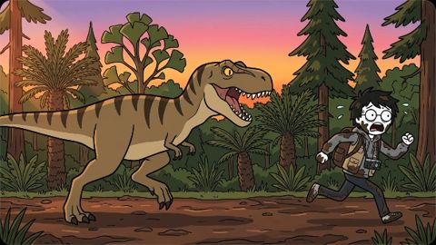
| 秒 | 聲音 | 層 | 優先 | 音量 | 為什麼 |
|---|---|---|---|---|---|
| 0.0～01-05 2.4 | 大型恐龍奔跑踏步聲（TEEN） | 事件 | must | 小 | 第 03 格 TEEN 第一次被揭露在 HERO 身後，沉重的奔跑踏步宣告反派登場與龐大體型，是全場第一個重要位置；旁白期間壓到 low，並延續到第 05 格的逼近感。少了它怪物出場的重量就不成立。 |

| 秒 | 聲音 | 層 | 優先 | 音量 | 為什麼 |
|---|---|---|---|---|---|
| 2.7～01-05 1.2 | 恐龍吼叫／咆哮（TEEN） | 事件 | must | 大 | 第 04 格血盆大口全開撲向鏡頭是本場高潮；放在該格旁白（0～2.74）結束後的空檔起音，才能開到 high 不蓋旁白，吼聲延進第 05 格強化逼近。這是全場最關鍵的一聲。 |
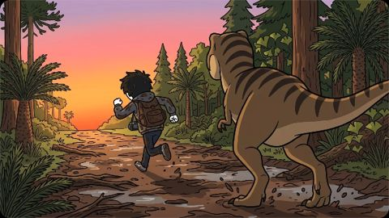
| 秒 | 聲音 | 層 | 優先 | 音量 | 為什麼 |
|---|---|---|---|---|---|
| 2.1 | HERO 驚恐短叫（無台詞） | 反應 | optional | 中 | 第 05 格 TEEN 逼到身後間距驟縮，HERO 的驚恐短叫強化危機；放在旁白（0～2.10）結束後的空檔，是無台詞的反應音。 |

| 秒 | 聲音 | 層 | 優先 | 音量 | 為什麼 |
|---|---|---|---|---|---|
| 0.0 | 定格凍結轉場音 | 轉場 | must | 中 | 第 06 格時間在此凍結、是第 16 場要重現的錨點並轉入早上的閃回；追逐聲在此全部切斷，配一記轉場音標記定格，是必要的轉場位置。音量取 mid 避免蓋住同格開頭的旁白。 |
| 0.0 | 恐龍咬合／合嘴聲 | 事件 | optional | 小 | 定格瞬間 TEEN 大口就在 HERO 身後，一記合嘴聲替凍結畫面收尾、呼應前面的吼叫；為不蓋旁白開頭只給 low，可加可不加。 |
第 2 場 HERO 的房間（早上） 5 種聲音・6 個 cue
安靜的早晨室內戲，大部分靠旁白，聲音極簡；只在手機亮起（劇情轉折）和開門出發（轉場）兩個關鍵點放 must，其餘用小聲的反應音和室內墊底豐富角色與氣氛。

| 秒 | 聲音 | 層 | 優先 | 音量 | 為什麼 |
|---|---|---|---|---|---|
| 0.0～02-09 1.72 | 清晨小套房室內墊底音 | 環境 | optional | 墊底 | 整場都在清晨的小套房裡，墊一層很小的室內靜音建立地點和早晨的安靜感；音量極小不干擾旁白。 |
| 2.9 | 疲憊／喪氣的嘆氣 | 反應 | optional | 小 | 開場 HERO 無精打采癱在椅上，旁白講完（2.86）後的空檔補一個疲憊嘆氣，一秒帶出這個累垮窮學生的狀態。 |


| 秒 | 聲音 | 層 | 優先 | 音量 | 為什麼 |
|---|---|---|---|---|---|
| 0.0 | 手機訊息提示音／震動 | 事件 | must | 小 | 本場劇情轉折：手機突然亮起、博士傳來新工作訊息。提示音就是「就在這時候」的觸發點，少了它畫面的螢幕亮起沒有依據；音量壓低讓同時開始的旁白聽得清楚。 |

| 秒 | 聲音 | 層 | 優先 | 音量 | 為什麼 |
|---|---|---|---|---|---|
| 5.6 | 半信半疑的鼻音（哼） | 反應 | optional | 小 | 旁白講完「上一次他也說會付錢」後，HERO 死魚臉的半信半疑用一個鼻音「哼」收尾，放在旁白結束（5.62）後的空檔，強化笑點與無奈。 |

| 秒 | 聲音 | 層 | 優先 | 音量 | 為什麼 |
|---|---|---|---|---|---|
| 2.0 | 疲憊／喪氣的嘆氣 | 反應 | optional | 小 | HERO 看向那疊帳單、肩膀塌下，旁白講完（2.02）後補一個喪氣嘆氣表現現實的重量；與下一格旁白講出的「唉」是兩個不同節拍，不衝突。 |

| 秒 | 聲音 | 層 | 優先 | 音量 | 為什麼 |
|---|---|---|---|---|---|
| 1.4 | 開門聲（轉門把、門打開） | 事件 | must | 中 | HERO 認命走到門口伸手開門，是離開房間、接到第 3 場（校園外）的轉場。開門聲放在旁白「還是去吧」講完（1.42）之後，當作本場收尾兼進下一場的橋樑；可自然延續到 EP1N-03-01。 |
第 3 場 校園・校務大樓旁的研究小屋外（早上） 5 種聲音・5 個 cue
安靜的校園早晨，整場靠環境音墊底、拖沓腳步鋪走路；重點只在兩個角色反應——開場的疲憊嘆氣（點出認命去上班的笑點）和結尾伸手碰門把前的緊張吞口水（警告標誌的猶豫高潮），都放在旁白講完的空檔，避免蓋到旁白。

| 秒 | 聲音 | 層 | 優先 | 音量 | 為什麼 |
|---|---|---|---|---|---|
| 0.0～03-03 3.76 | 校園早晨環境音（鳥鳴、微風、遠處人聲） | 環境 | optional | 墊底 | 整場都在戶外校園，墊一層很小聲的早晨環境音讓地點成立；音量 bg 不蓋旁白 |
| 0.0～03-02 3.76 | 步道上緩慢拖沓的腳步聲 | 事件 | optional | 小 | 01、02 格 HERO 持續在走（拖沓→走向小屋），腳步聲貼著走路；03 格他站定故不延伸 |
| 2.3 | 疲憊的嘆氣（男性，無台詞） | 反應 | must | 小 | 這一格的重點是肩膀微垮、腳步拖沓的認命感，一聲疲憊嘆氣點出角色不想上班的笑點；放在旁白 2.26 講完後的空檔，不蓋旁白 |


| 秒 | 聲音 | 層 | 優先 | 音量 | 為什麼 |
|---|---|---|---|---|---|
| 3.5 | 緊張的吞口水／屏息（男性，無台詞） | 反應 | must | 小 | 全場的情緒高潮：面對貼滿警告標誌的門、猶豫要不要開，一聲緊張吞口水把猶豫演出來；放在旁白 3.46 講完後的空檔 |
| 3.6 | 手碰到老舊金屬門把的輕響 | 事件 | optional | 小 | HERO 伸手想去碰門把，輕輕一聲金屬門把聲收尾並銜接下一場（開門後 PROF 興奮宣布）；不加也行故列 optional |
第 4 場 博士的實驗室（研究小屋一樓）（早上） 10 種聲音・10 個 cue
室內講課為主，整體安靜，靠角色反應音和道具事件音點出笑點與轉折；三個 must 都在戲的關鍵：PROF 閃到腰的悶哼（動作笑點高潮）、拉桿的金屬聲（提前啟動的轉折）、拍機器的一下（收尾接時空跳躍）。旁白密集，其餘都壓很小或放在旁白講完的空檔。
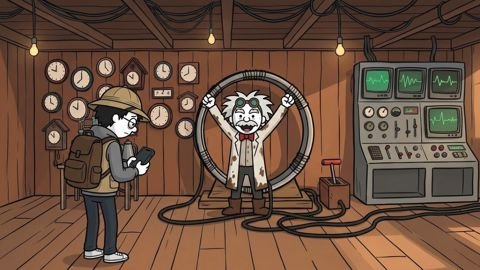
| 秒 | 聲音 | 層 | 優先 | 音量 | 為什麼 |
|---|---|---|---|---|---|
| 0.0～04-20 3.96 | 實驗室／時光機低頻嗡嗡聲 | 環境 | optional | 墊底 | 北牆時光機圓環一直在場，整場墊一層很小的機器嗡嗡聲建立『實驗小屋』空間感；安靜講課為主，所以只給 bg、optional。 |

| 秒 | 聲音 | 層 | 優先 | 音量 | 為什麼 |
|---|---|---|---|---|---|
| 0.8 | 手機滑動／點按聲 | 事件 | optional | 小 | 這格是建立 HERO 無動於衷基調的定格（拇指滑動），一兩下輕微滑手機聲點出他只顧滑手機；聲音小、壓在旁白下不搶話。 |

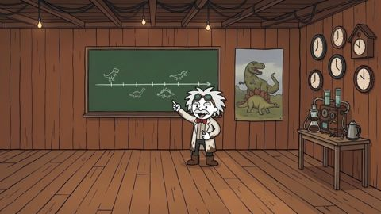
| 秒 | 聲音 | 層 | 優先 | 音量 | 為什麼 |
|---|---|---|---|---|---|
| 0.5～15.5 | 粉筆在黑板上畫線聲 | 事件 | optional | 小 | PROF 背對鏡頭在黑板上畫整條時間線，粉筆聲讓這個資訊鏡頭有實感；旁白整格在講，所以壓低做底不搶旁白。 |

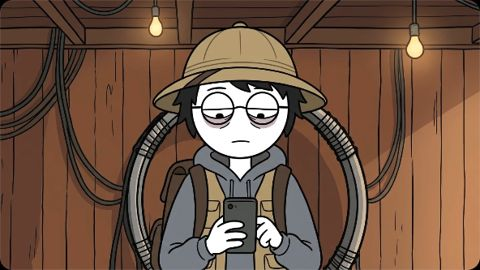

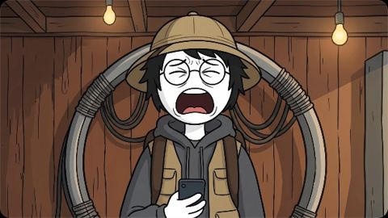
| 秒 | 聲音 | 層 | 優先 | 音量 | 為什麼 |
|---|---|---|---|---|---|
| 0.8 | HERO 誇張打哈欠（無台詞） | 反應 | optional | 小 | HERO 誇張哈欠是對比笑點，哈欠聲和畫面同步能加強『無聊到爆』；旁白只有 2.3 秒又在描述哈欠，故壓低與動作同時出不蓋過旁白。 |


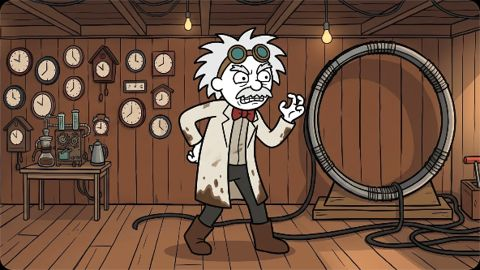
| 秒 | 聲音 | 層 | 優先 | 音量 | 為什麼 |
|---|---|---|---|---|---|
| 7.0 | 急轉身的風聲 | 事件 | optional | 小 | 旁白 6.82 秒起講『博士示範急轉彎』，配一下輕的轉身風聲帶出急轉動作；此時旁白還在，故 low。 |
| 10.0 | PROF 閃到腰的悶哼（無台詞） | 反應 | must | 大 | 第三課的動作笑點高潮＝PROF 閃到腰，悶哼是這個笑點的關鍵，少了它笑點不成立；放在旁白 10.04 秒講完後的空檔才能放大聲。 |


| 秒 | 聲音 | 層 | 優先 | 音量 | 為什麼 |
|---|---|---|---|---|---|
| 0.5～7.0 | 小推車滾動聲 | 事件 | optional | 小 | PROF 推著載有三樣道具的小推車朝鏡頭推來，推車滾動聲讓『推過來』這個動作有聲音；旁白在講，故 low 墊底。 |
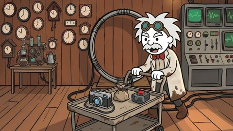


| 秒 | 聲音 | 層 | 優先 | 音量 | 為什麼 |
|---|---|---|---|---|---|
| 3.8 | 洋芋片袋被抓起的沙沙聲 | 事件 | optional | 小 | 『最後你選了洋芋片』的取捨笑點，手抓到洋芋片的沙沙聲替笑點收尾；放在旁白尾聲（約 3.8 秒）手伸向洋芋片那一刻。 |

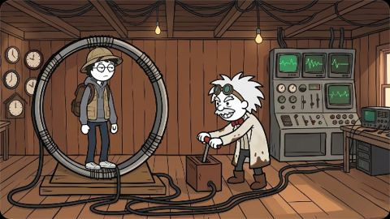
| 秒 | 聲音 | 層 | 優先 | 音量 | 為什麼 |
|---|---|---|---|---|---|
| 5.5～04-20 0.3 | 金屬拉桿被用力拉下的喀聲 | 事件 | must | 中 | 『結果他直接就拉了』是轉折，拉桿的金屬喀聲讓『提前拉下』這個惡作劇有具體聲音；放在旁白 5.52 秒講完後，聲音可微微帶進下一格。 |

| 秒 | 聲音 | 層 | 優先 | 音量 | 為什麼 |
|---|---|---|---|---|---|
| 3.7 | 拳頭／手掌用力拍打金屬機器 | 事件 | must | 大 | 全場收尾＝PROF 用力拍機器，這一拍是接下一場時空跳躍的引子，少了它收尾沒力；放在旁白 3.66 秒講完『用力拍了一下』之後，可放最大聲。 |
第 5 場 插圖：六千六百五十萬年前的北美洲（—） 2 種聲音・3 個 cue
俯瞰古地圖的科普插圖，旁白幾乎鋪滿整場，整體非常安靜；唯一的聲音重點是結尾森林裡的藍光閃現——它是切進第 6 場墜地點的轉場錨點，一定要有。其餘只墊一層幾乎聽不到的高空空氣聲當氣氛。

| 秒 | 聲音 | 層 | 優先 | 音量 | 為什麼 |
|---|---|---|---|---|---|
| 0.0～05-02 2.68 | 高空／空曠大地的微弱空氣聲 | 環境 | optional | 墊底 | 整段是俯瞰大陸的靜止插圖，墊一層幾乎聽不到的高空空氣聲避免畫面死寂，音量壓到最低不蓋旁白；可有可無，故 optional |
| 6.5 | 森林裡的藍光閃現（時空降落） | 轉場 | optional | 小 | 旁白講到「就掉在西邊這一半」（約 6s 起）正指向西部森林那個發光亮點，給一聲極輕的藍光微光呼應亮點；在旁白內只能小聲，加了更清楚、不加也行 |

| 秒 | 聲音 | 層 | 優先 | 音量 | 為什麼 |
|---|---|---|---|---|---|
| 2.3～06-01 0.5 | 森林裡的藍光閃現（時空降落） | 轉場 | must | 大 | 林冠間閃過的藍光是切進第 6 場 HERO 墜地的轉場錨點，少了它這個切換會很突兀；特意放在旁白講完（2.38s）之後才放大聲，並讓尾音跨進下一格墜地那一瞬間，把兩場接起來 |
第 6 場 降落點森林（上午） 12 種聲音・14 個 cue
森林空地的悶熱氣氛墊底；全場靠四個關鍵聲把戲撐起來——報幕的蚊子、石頭眨眼、甲龍的沉睡呼吸、以及收尾的水聲。甲龍只想睡，所以揭露爆點不用大音量，眨眼和鼾聲都壓低，反而更好笑。旁白很滿，大聲的音效幾乎無處安放，因此全場以 bg／low 為主。
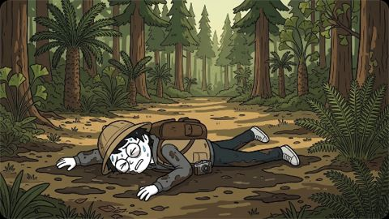
| 秒 | 聲音 | 層 | 優先 | 音量 | 為什麼 |
|---|---|---|---|---|---|
| 0.0～06-11 7.42 | 悶熱森林環境音（鳥、蟲、濕氣） | 環境 | optional | 墊底 | 整場都在悶熱潮濕的森林空地，墊一層低到幾乎聽不見的叢林環境音讓地點成立；不蓋旁白所以全程 bg。 |
| 0.0 | 身體臉朝下摔進泥地的悶響 | 事件 | optional | 小 | 鏡頭一開就是臉朝下摔在泥裡的狼狽瞬間，開場第一秒給一記悶悶的泥巴聲呼應旁白『你是臉先著地的』；壓低避免蓋住同時開始的旁白。 |
| 2.6 | 時光隧道藍光收合、關閉的聲音 | 轉場 | optional | 小 | 旁白講到『身後的隧道也跟著關了起來』、畫面上方藍光正在收合，配一記收合的轉場音點出隧道關閉；放在句尾、音量壓低不搶旁白。 |

| 秒 | 聲音 | 層 | 優先 | 音量 | 為什麼 |
|---|---|---|---|---|---|
| 5.5～13.02 | 蚊子在耳邊臉前嗡嗡飛 | 事件 | must | 小 | 旁白點名『第一個跑來歡迎你的，是蚊子』、畫面蚊子在臉前嗡嗡飛，這是全場第一個笑點；蚊子聲細且不吵，低音量疊在旁白下不影響聽清。沒有它這個喜劇點會落空，列 must。 |

| 秒 | 聲音 | 層 | 優先 | 音量 | 為什麼 |
|---|---|---|---|---|---|
| 0.4 | 手機送出搜尋的輕點／UI 音 | 事件 | optional | 小 | 插入鏡頭剛送出搜尋、畫面轉成載入圈圈，一記輕點提示『搜尋已送出』，再進入乾等的沉默更有喜感；可有可無。 |


| 秒 | 聲音 | 層 | 優先 | 音量 | 為什麼 |
|---|---|---|---|---|---|
| 1.5 | 撥開及腰蕨葉的沙沙聲 | 事件 | optional | 小 | HERO 一手撥開及腰蕨葉轉頭張望，配一下葉子沙沙聲增加身在蕨叢的實感；非關鍵，列 optional。 |

| 秒 | 聲音 | 層 | 優先 | 音量 | 為什麼 |
|---|---|---|---|---|---|
| 2.0～8.0 | 大型動物沉睡的緩慢呼吸／低鼾（甲龍） | 事件 | optional | 墊底 | HERO 坐上『石頭』休息，其實是睡著的甲龍；這裡偷偷墊一層幾乎聽不見的沉睡呼吸作伏筆，讓觀眾隱約覺得不對勁，為下一鏡的揭露鋪梗。 |

| 秒 | 聲音 | 層 | 優先 | 音量 | 為什麼 |
|---|---|---|---|---|---|
| 2.2 | 爬蟲類眼睛睜開眨動的濕潤聲 | 事件 | must | 小 | 旁白『那顆石頭，眨了一下眼睛』的同步揭露爆點，一聲濕潤的眨眼把『石頭是活的』敲定；對準句尾、音量低才有偷偷一眨的詭異感。少了它揭露就沒有聲音落點，列 must。 |
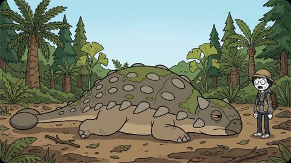
| 秒 | 聲音 | 層 | 優先 | 音量 | 為什麼 |
|---|---|---|---|---|---|
| 0.0～9.28 | 大型動物沉睡的緩慢呼吸／低鼾（甲龍） | 事件 | must | 小 | 甲龍全貌揭露、睡眼惺忪又要睡回去，一整段低沉緩慢的大型動物鼾息給牠體量與重量，也印證旁白『牠只想繼續睡覺』；低音量貼在旁白下。這是全場主角怪獸的聲音身分，列 must。 |
| 0.2 | HERO 嚇到倒抽一口氣 | 反應 | optional | 小 | HERO 嚇到定格、張嘴倒抽一口氣，接住上一鏡眨眼的驚嚇；角色無台詞，只用一聲吸氣表達。可有可無，列 optional。 |

| 秒 | 聲音 | 層 | 優先 | 音量 | 為什麼 |
|---|---|---|---|---|---|
| 0.0～2.68 | 大型動物沉睡的緩慢呼吸／低鼾（甲龍） | 事件 | optional | 墊底 | HERO 踮腳偷溜時，背景甲龍仍在睡，續一層極小的鼾聲維持『別吵醒牠』的緊張，也讓偷溜有對照。 |
| 0.2～2.68 | 踮腳尖偷溜的輕腳步 | 事件 | optional | 小 | 誇張踮腳溜走的動作配輕手輕腳的腳步，強化偷偷摸摸的喜感；非關鍵，列 optional。 |

| 秒 | 聲音 | 層 | 優先 | 音量 | 為什麼 |
|---|---|---|---|---|---|
| 1.5 | 打開背包／拉鍊翻找的聲音 | 事件 | optional | 小 | HERO 把背包拿下打開往裡看，一記拉鍊翻找聲帶出『發現水壺不在』的失落動作；可有可無。 |
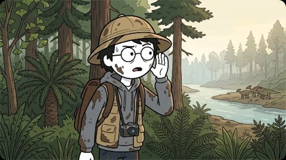
| 秒 | 聲音 | 層 | 優先 | 音量 | 為什麼 |
|---|---|---|---|---|---|
| 1.0～7.42 | 遠處傳來的流水／溪聲 | 事件 | must | 小 | 旁白『你聽到了水聲』是今天第一個好消息、也是把觀眾帶往下一場河流的鉤子；從畫外傳來的低聲流水必須出現觀眾才聽得到他聽到的東西。不淡出，直接橋接下一場的鴨嘴龍喝水河邊。列 must。 |
第 7 場 河岸（上午） 4 種聲音・4 個 cue
整場墊一層幾乎聽不到的流水聲建立河岸地點；真正的重點只有相機快門（這格的動作核心，也是「拍了照卻不是暴龍」笑點的支點）。鴨嘴龍群遠處一聲溫和低鳴點出牠們首次登場與體型，全程壓到很小不蓋旁白；HERO 的無奈嘆氣是收尾的選擇性笑點。

| 秒 | 聲音 | 層 | 優先 | 音量 | 為什麼 |
|---|---|---|---|---|---|
| 0.0～07-02 4.46 | 寬闊河流緩緩流動的環境音 | 環境 | optional | 墊底 | 整場都在寬闊河岸，墊一層極小聲的流水聲建立地點氣氛，跨兩格到場景結束；音量壓到 bg 不干擾旁白。 |
| 1.0 | 對岸鴨嘴龍群溫和的遠處低鳴 | 事件 | optional | 小 | 鴨嘴龍群首次登場，一聲遠處溫和低鳴點出牠們的存在與「跟大象差不多大、脾氣很好」的感覺；因在旁白時段內，壓到 low 當遠景底噪。 |
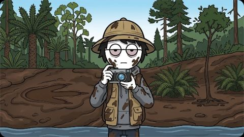
| 秒 | 聲音 | 層 | 優先 | 音量 | 為什麼 |
|---|---|---|---|---|---|
| 1.5 | 相機快門喀嚓聲 | 事件 | must | 中 | 快門聲是這格的動作核心（按下快門那一刻），也是「拍了照卻不是暴龍、不算數」笑點的支點；放在「你拍了一張照片」之後、第二句之前的停頓（……）裡，不蓋旁白。 |
| 4.2 | HERO 無奈的嘆氣 | 反應 | optional | 小 | 旁白講完「不算數」後，HERO 的死魚臉／無奈表情配一聲短嘆氣收尾，強化笑點；放在旁白結束後、避免搶旁白，因這格最後、不能跨到下一場，所以用簡短的呼氣。 |
第 8 場 暫停講解：地獄溪（從河岸拉高到整片北美洲，再看今天的荒地）（上午（定格）） 7 種聲音・7 個 cue
這是一場定格暫停講解，HERO 從頭到尾不動、沒有反應音；聲音主要靠轉場（定格、鏡頭拉高、穿越到今天）來標示段落，環境音用來墊史前河岸和今天荒地的對比，旁白幾乎全程連續所以大音量只放在格與格之間的空檔。
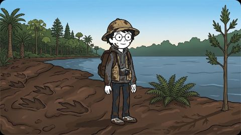
| 秒 | 聲音 | 層 | 優先 | 音量 | 為什麼 |
|---|---|---|---|---|---|
| 0.0 | 定格急停音（唱盤急停／突然靜止） | 轉場 | must | 中 | 這一整場「暫停講解」就是從 HERO 放下相機、半轉身定格那一刻開始；配合旁白「先停一下」給一個短促急停音，觀眾才知道時間停住、進入旁白講解模式，少了它這個轉折不成立。放在 0.0 且很短，只壓到第一個字，不蓋旁白。 |
| 0.0～08-03 3.0 | 河岸環境音（流水、微風） | 環境 | optional | 墊底 | 開頭兩格要建立「你現在在這裡（河岸）」的空間感，墊一層極小聲的河岸環境音；等 08-03 鏡頭開始拉高離開地面就慢慢淡出。 |


| 秒 | 聲音 | 層 | 優先 | 音量 | 為什麼 |
|---|---|---|---|---|---|
| 0.0～3.5 | 鏡頭向上拉高的呼嘯聲 | 轉場 | optional | 小 | 旁白說「來，我們把鏡頭拉高一點」正是鏡頭急速上升的起點，一聲向上的呼嘯能強化「拉高」這個動作；因為旁白連續，壓低到 low 墊在底下。 |


| 秒 | 聲音 | 層 | 優先 | 音量 | 為什麼 |
|---|---|---|---|---|---|
| 11.6～08-08 0.8 | 時間跳轉／穿越轉場（史前跳到今天） | 轉場 | must | 大 | 這是全場最大的轉折：從史前河岸「穿越到今天的荒地」。大音量的時間跳轉音放在 08-07 旁白講完後的空檔（11.58 秒起）衝起來，尾巴接進 08-08 的切換點，既不蓋旁白又把今昔對比的衝擊做出來。 |

| 秒 | 聲音 | 層 | 優先 | 音量 | 為什麼 |
|---|---|---|---|---|---|
| 0.0～08-10 4.3 | 乾燥荒地的風聲 | 環境 | optional | 小 | 08-08～08-10 都是「今天」乾裂空曠的荒地（含 1902 年化石獵人那格），墊一層乾風聲做出跟史前潮濕森林的氣氛對比，空曠感更強。 |


| 秒 | 聲音 | 層 | 優先 | 音量 | 為什麼 |
|---|---|---|---|---|---|
| 0.0～4.0 | 刷子刷掉化石上泥土的聲音 | 事件 | optional | 小 | 畫面是化石獵人低頭專注刷掉巨大骨頭上的泥土，一點輕柔刷土聲能讓這個「人類第一具暴龍骨頭出土」的插圖活起來；旁白講話所以保持小聲。 |

| 秒 | 聲音 | 層 | 優先 | 音量 | 為什麼 |
|---|---|---|---|---|---|
| 0.0～3.5 | 鏡頭從太空降回地面的呼嘯聲 | 轉場 | optional | 小 | 鏡頭從太空一路降回 HERO 身邊、收束這段暫停並接回劇情，用一聲下降呼嘯跟 08-03 的拉高呼嘯前後呼應；旁白連續所以壓低到 low。 |
第 9 場 河岸蕨類叢（上午） 10 種聲音・13 個 cue
全場墊河岸環境音；聲音主軸是『暴龍一步步逼近』——第一次探頭用鼻息（首次揭露）、彎樹是笑點、咬空的牙齒相撞是高潮。所有大聲的吼叫、尖叫、咬合都卡在旁白講完後的空檔，旁白時間內只墊小聲的鼻息與環境音。

| 秒 | 聲音 | 層 | 優先 | 音量 | 為什麼 |
|---|---|---|---|---|---|
| 0.0～09-17 2.6 | 河岸環境音（流水＋遠處水鳥） | 環境 | optional | 墊底 | 整場都在河岸蕨類叢，用流水＋水鳥墊出戶外河邊的空間感，全程極小聲不壓旁白 |

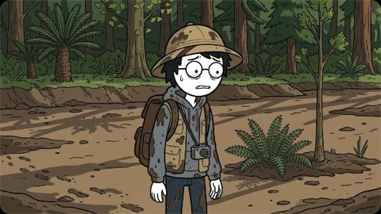

| 秒 | 聲音 | 層 | 優先 | 音量 | 為什麼 |
|---|---|---|---|---|---|
| 0.8 | 對岸鴨嘴龍群警覺的集體叫聲 | 反應 | optional | 小 | 對岸鴨嘴龍群同時抬頭停止喝水、全望向 HERO 背後——這是危機逼近的第一個暗示，一聲集體警覺叫聲強化『牠們發現了什麼』，小聲墊在旁白下不搶詞 |

| 秒 | 聲音 | 層 | 優先 | 音量 | 為什麼 |
|---|---|---|---|---|---|
| 3.1 | HERO 倒吸一口氣（無台詞） | 反應 | optional | 小 | 旁白 3.36 秒講完後的空檔，HERO 不情願回頭時倒吸一口氣，接住『還是回頭了』的恐懼，不與旁白重疊 |

| 秒 | 聲音 | 層 | 優先 | 音量 | 為什麼 |
|---|---|---|---|---|---|
| 1.2～4.32 | 暴龍鼻孔用力嗅聞聲 | 事件 | must | 小 | 暴龍第一次露面（頭從樹後探出）＋旁白明說『牠沒有吼叫，牠在聞』——鼻息是這一格的核心，少了它揭露就沒重量；壓低音量讓旁白聽得清楚 |
| 1.2～09-07 9.56 | 暴龍低沉胸腔呼吸、悶吼 | 事件 | optional | 小 | 從探頭到身高對比這兩格，用低沉呼吸悶吼墊出暴龍就在眼前的龐大壓迫感，持續但很小聲不壓旁白 |

| 秒 | 聲音 | 層 | 優先 | 音量 | 為什麼 |
|---|---|---|---|---|---|
| 0.0 | HERO 倒吸一口氣（無台詞） | 反應 | optional | 小 | 揭露身高落差的錨點鏡頭，HERO 仰頭看到只到膝蓋時倒吸一口氣，強化渺小與驚嚇 |


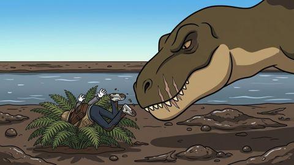


| 秒 | 聲音 | 層 | 優先 | 音量 | 為什麼 |
|---|---|---|---|---|---|
| 1.4～2.76 | 細樹被壓彎的吱嘎聲 | 事件 | must | 中 | 笑點鏡頭『這棵樹比你想的還要軟』的視覺落差要靠吱嘎彎折聲才成立，少了這聲笑點會變弱；在旁白 2.46 秒講完前後讓樹聲帶到最彎 |
| 2.4 | HERO 驚恐短尖叫（無台詞） | 反應 | optional | 中 | 樹彎下去把 HERO 甩出去，他睜大眼張口尖叫；放在旁白講完後的空檔，不蓋旁白 |


| 秒 | 聲音 | 層 | 優先 | 音量 | 為什麼 |
|---|---|---|---|---|---|
| 3.6～4.16 | 暴龍張口威嚇低吼 | 事件 | optional | 中 | 暴龍張到最大口逼近，旁白 3.86 秒講完後補一聲威嚇低吼，替下一格的咬合蓄勢，卡在旁白之後 |
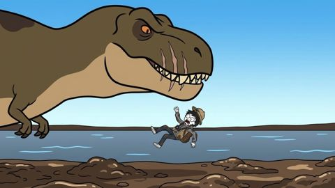
| 秒 | 聲音 | 層 | 優先 | 音量 | 為什麼 |
|---|---|---|---|---|---|
| 7.9 | 巨顎咬合、牙齒相撞（咬空） | 事件 | must | 大 | 全場高潮『咬了個空』——牙齒喀地相撞是這一刻的關鍵，必須最大聲；精準卡在旁白 7.94 秒結束後的空檔爆出，不壓旁白 |
| 7.9 | HERO 驚恐短尖叫（無台詞） | 反應 | optional | 中 | 咬合同時 HERO 從嘴下墜落尖叫，與牙齒相撞疊在一起強化驚險，同樣放在旁白之後 |

| 秒 | 聲音 | 層 | 優先 | 音量 | 為什麼 |
|---|---|---|---|---|---|
| 1.4～2.6 | HERO 拔腿奔跑腳步 | 事件 | optional | 中 | 旁白『拔腿就跑』講完後，HERO 落地狂奔的腳步帶出下一場追逐的動勢 |
| 1.4 | HERO 驚恐短尖叫（無台詞） | 反應 | optional | 中 | HERO 爬起狂奔時張口尖叫，接住逃命的情緒，放在旁白講完後 |
第 10 場 暫停講解：暴龍的眼睛和鼻子（上午（定格）） 3 種聲音・3 個 cue
這是定格講解場，刻意拿掉環境音來凸顯「時間暫停」的感覺；開頭用一個定格音切進講解，結尾用暴龍逼近的低吐息把觀眾拉回危機並接到下一場追逐。中間的嗅聞是選擇性鋪陳。旁白幾乎鋪滿整場，大聲的音效只放在旁白講完後的空檔。

| 秒 | 聲音 | 層 | 優先 | 音量 | 為什麼 |
|---|---|---|---|---|---|
| 0.0 | 定格暫停音（唱片急停／定格） | 轉場 | must | 中 | 旁白一開口就是「等一下，先暫停」，畫面同時定格；這個定格音是告訴觀眾劇情被按下暫停、進入講解模式的關鍵轉場，少了它看不出是定格。放在 0.0 和「暫停」同步落點，短促、播完即止，不會壓到後面旁白。 |


| 秒 | 聲音 | 層 | 優先 | 音量 | 為什麼 |
|---|---|---|---|---|---|
| 0.5 | 暴龍用力嗅聞（大鼻孔吸氣） | 事件 | optional | 小 | 這一格主體是暴龍張大鼻孔用力嗅聞蕨類，正在講解牠的鼻子多靈；一聲嗅聞能把「聞味道」具象化。旁白全程在講話，所以只放小聲的 low 墊在底下，不搶旁白。 |


| 秒 | 聲音 | 層 | 優先 | 音量 | 為什麼 |
|---|---|---|---|---|---|
| 5.2～11-01 1.5 | 暴龍逼近的低沉吐息／悶吼 | 事件 | must | 中 | 講解結束、回到彩色劇情，旁白收在「牠看得一清二楚，也聞得一清二楚」的揭曉句上（5.20 結束）。在旁白講完後的空檔放暴龍逼到屁股邊的低沉吐息，把觀眾從靜止的講解拉回「危機就在眼前」，並一路延伸進下一場追逐（EP1N-11-01）當作橋接；少了它，從定格講解突然跳到追逐會很突兀。 |
第 11 場 林間小路・倒下的樹幹（上午） 7 種聲音・10 個 cue
追逐的收尾場：靠暴龍的沉重踏步和吃力喘氣鋪出「牠跑不動了」的轉折，相機快門是任務完成的關鍵點，結尾用定格音接下一場的對峙。旁白幾乎鋪滿每格，吼叫類不放，重音（快門、定格）都塞在旁白講完後的空檔。

| 秒 | 聲音 | 層 | 優先 | 音量 | 為什麼 |
|---|---|---|---|---|---|
| 0.0～11-06 5.16 | 林間小路環境音（鳥鳴、風吹樹葉） | 環境 | optional | 墊底 | 整場都在林間小路，墊一層森林底噪讓追逐有地點感；全程小聲不蓋旁白。 |
| 0.0～3.9 | 巨型暴龍沉重踏步、地面震動 | 事件 | must | 小 | 旁白正說「地面每震動一下」，必須聽到暴龍一步步沉重的踏步聲才成立；壓在 low 不蓋旁白，節奏式鋪在 0～3.9 秒。 |
| 0.0～3.9 | HERO 奔跑中急促喘氣（無台詞） | 反應 | optional | 墊底 | HERO 張口喘氣拚命衝，墊一層急促呼吸加緊張感；bg 不干擾旁白。 |

| 秒 | 聲音 | 層 | 優先 | 音量 | 為什麼 |
|---|---|---|---|---|---|
| 0.0～12.54 | 巨型暴龍吃力的大口喘氣 | 事件 | must | 小 | 本格是全片轉折——暴龍跑不動了。旁白講「速度慢下來、骨頭撐不住」時，必須聽到牠吃力的大口喘氣才有說服力；low 墊在旁白底下。 |
| 0.0～7.5 | 巨型暴龍沉重踏步、地面震動 | 事件 | optional | 小 | 從奔跑降成吃力半走，踏步由急轉緩、逐漸拖沓，強化「慢下來」；加了更好，不加也行。 |

| 秒 | 聲音 | 層 | 優先 | 音量 | 為什麼 |
|---|---|---|---|---|---|
| 0.0～4.9 | HERO 奔跑中急促喘氣（無台詞） | 反應 | optional | 墊底 | HERO 還在邊跑邊回頭、手發抖，墊一層喘氣維持動作的緊繃；bg 不蓋旁白。 |
| 5.0 | 小相機快門喀嚓聲 | 事件 | must | 中 | 任務的關鍵動作「按下了快門」，一聲清脆快門是這場的重點 beat；放在旁白講完（4.98 秒）後的空檔，不被人聲蓋掉。 |


| 秒 | 聲音 | 層 | 優先 | 音量 | 為什麼 |
|---|---|---|---|---|---|
| 3.3 | HERO 得意的短促哼笑（無台詞） | 反應 | optional | 小 | HERO 站上倒木得意揮手道別，一聲短促的哼笑是這裡的笑點；放在旁白講完（3.26 秒）後的空檔，不加也可以。 |

| 秒 | 聲音 | 層 | 優先 | 音量 | 為什麼 |
|---|---|---|---|---|---|
| 0.0～4.86 | 巨型暴龍吃力的大口喘氣 | 事件 | must | 小 | 特寫暴龍喘著氣、眼神受傷的情感收尾；旁白說「喘著氣看你」時必須聽到胸口起伏的沉重呼吸，少了這聲這一刻會變平；low 墊底不蓋旁白。 |
| 4.9 | 定格瞬間的頓音（短促撞擊＋凝結感） | 轉場 | must | 中 | 本場結尾要接下一場「倒木上的對峙定格」，用一記頓音把畫面凝住、順勢轉場；放在旁白講完（4.86 秒）後，避開人聲。 |
第 12 場 暫停講解：為什麼大恐龍跑不快（上午（定格）） 5 種聲音・7 個 cue
這是一段定格講解（暫停全片插入物理解說），絕大多數格是白底手繪插圖、旁白密集，不放音效；聲音只集中在頭尾兩個劇情定格（12-01 進入定格、12-18 解除定格恢復動態），以及把全集笑點premise立起來的『喘到不行的暴龍』喘氣聲。中間唯一給一記的是九噸暴龍砸進礦井的搞笑撞擊（12-06），其餘插圖小哏（骨頭裂、油罐噴火、灰塵雲）刻意留白給配樂，避免跟密集旁白打架。

| 秒 | 聲音 | 層 | 優先 | 音量 | 為什麼 |
|---|---|---|---|---|---|
| 0.0 | 劇情定格轉場音（唱片急停／時間凍結） | 轉場 | must | 中 | 這一格是全片暫停、切入物理講解的定格瞬間；一記唱片急停／凍結音才能讓觀眾知道『畫面停住、現在開始解說』，少了它這個轉場說不通。放在 0.0 的剪點上、音量 mid 很短，隨即讓位給旁白。 |
| 0.3～7.66 | 暴龍喘到不行的沉重喘氣聲 | 反應 | optional | 小 | 整集核心笑點就是『這隻暴龍喘到追不動』，定格裡牠側腹喘氣；墊一層小聲喘氣把『牠已經累垮』立起來。壓在旁白底下用 low，不蓋掉台詞。 |
| 0.0～7.66 | 森林環境音（鳥叫、枝葉） | 環境 | optional | 墊底 | 定格前後都在森林小路，墊一層幾乎聽不到的森林底音讓這一刻還連著劇情現場；中段白底插圖不鋪。 |


| 秒 | 聲音 | 層 | 優先 | 音量 | 為什麼 |
|---|---|---|---|---|---|
| 8.6 | 巨大暴龍像石頭直墜、重重砸進礦井底的撞擊 | 事件 | optional | 中 | 這格是整段講解最有重量的搞笑物理哏——九噸暴龍像石頭直直砸進井底；一記沉重撞擊讓『越大越停不住』有實感。壓在旁白『重重砸在井底』收尾處（約 8.6 秒），只剩很短尾巴、mid 音量，note 有提到會輕微壓到旁白尾音。 |
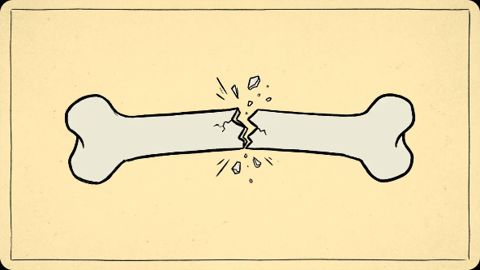


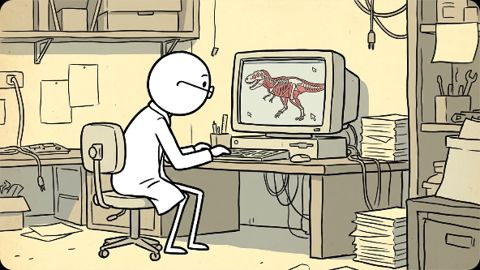


| 秒 | 聲音 | 層 | 優先 | 音量 | 為什麼 |
|---|---|---|---|---|---|
| 0.0 | 解除定格、時間恢復流動的轉場音 | 轉場 | must | 中 | 講解結束、畫面恢復動態回到劇情（與開頭同構圖）；一記時間恢復的轉場音對應開頭的凍結音，告訴觀眾『解說收工、故事繼續』，是這場收束的關鍵轉場。放在 0.0 剪點、很短。 |
| 0.3～4.04 | 暴龍喘到不行的沉重喘氣聲 | 反應 | optional | 小 | 恢復動態後暴龍還在喘，收在旁白『不是不想追，是追不動』上，喘氣聲替這句笑點收尾。low 音量不蓋旁白。 |
| 0.0～4.04 | 森林環境音（鳥叫、枝葉） | 環境 | optional | 墊底 | 回到森林小路現場，重新墊回開頭那層森林底音，和下一場（EP1N-13）的實景銜接。 |
第 13 場 乾河床（下午） 6 種聲音・6 個 cue
輕鬆散步段落以河床環境音和腳步、口哨墊出放鬆感，和結尾的恐怖轉折形成對比；關鍵是最後蕨類擺動的沙沙聲（唯一揭示音）。環境音刻意『不放風聲』，因為旁白點破『今天根本沒有風』，蕨類會動才嚇人，環境若有風會毀掉這個哏。
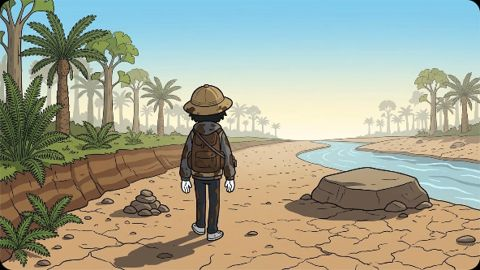
| 秒 | 聲音 | 層 | 優先 | 音量 | 為什麼 |
|---|---|---|---|---|---|
| 0.0～13-06 6.18 | 午後乾河床環境音（遠處流水、蟲鳴鳥叫，無風） | 環境 | optional | 墊底 | 整場都在開闊乾河床，大量環境入鏡建立場景，墊一層極小聲的遠處流水蟲鳴讓空間不空；刻意不含風聲，保留結尾『沒有風蕨類卻動』的哏 |
| 0.0～13-02 7.9 | 乾河床走路腳步聲（碎石乾沙） | 事件 | optional | 小 | 01、02 格 HERO 一直在河床上走（先背對走遠、再走向鏡頭），腳步聲加真實感；旁白在講話，壓到 low |
| 0.0～8.9 | HERO 悠哉吹口哨 | 反應 | optional | 小 | 旁白明寫『還吹起了口哨』，動作也是吹口哨，口哨點出此刻的放鬆得意，和結尾恐怖反差；與旁白同時故壓 low |
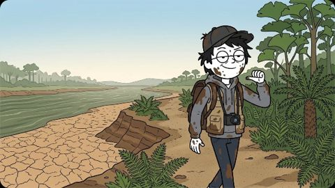

| 秒 | 聲音 | 層 | 優先 | 音量 | 為什麼 |
|---|---|---|---|---|---|
| 2.6 | 手機自拍快門聲 | 事件 | must | 中 | 整集任務就是『拍到照片』，自拍快門是這個任務達成的聽覺確認，也是下一格看照片的前因；放在旁白講完（2.54 秒）後的空檔，不蓋旁白 |


| 秒 | 聲音 | 層 | 優先 | 音量 | 為什麼 |
|---|---|---|---|---|---|
| 0.1 | HERO 受驚倒抽一口氣（笑容僵住） | 反應 | optional | 小 | 『笑容僵住了』的瞬間，一聲倒抽氣讓恐懼爬上臉更有感；角色無台詞只能用氣音，壓 low 不蓋旁白 |

| 秒 | 聲音 | 層 | 優先 | 音量 | 為什麼 |
|---|---|---|---|---|---|
| 3.4 | 身後蕨類被撥動的沙沙聲 | 事件 | must | 小 | 全場唯一的關鍵揭示：旁白『背後的蕨類，動了一下』唸到『動了一下』時（約 3.4 秒）同步一聲沙沙，少了它這個轉折就不成立；緊接『今天根本沒有風』點破異常，也預告下一格盜龍登場，沙沙聲屬低頻小聲可與旁白重疊 |
第 14 場 森林空地（傍晚） 12 種聲音・13 個 cue
黃昏森林先鋪蟲鳴鳥叫的環境底，到 14-15「蟲不叫了鳥也不叫了」硬切成靜默，是察覺大魔王的關鍵反轉；全場兩個實體重音為 14-10 腫頭龍撞樹的高潮撞擊、14-16 青少年暴龍登場的低頻喉音，其餘恐龍動作與角色反應都放小聲、讓旁白清楚。
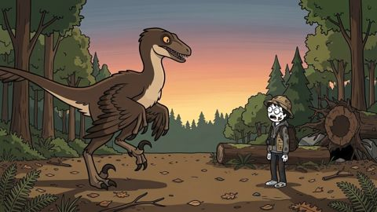
| 秒 | 聲音 | 層 | 優先 | 音量 | 為什麼 |
|---|---|---|---|---|---|
| 0.0～14-15 0.0 | 黃昏森林蟲鳴鳥叫環境音 | 環境 | must | 墊底 | 整段墊底的黃昏森林蟲鳴鳥叫；在 14-15 旁白「蟲不叫了，鳥也不叫了」的瞬間硬切成無聲，這個突如其來的靜默就是主角察覺危險逼近的反轉——沒有先鋪這層底，就沒有東西可以『停下來』。 |
| 3.5 | 盜龍羽毛炸開與低嘶吼 | 事件 | optional | 小 | 第一隻恐龍登場：對到旁白「全身都是羽毛」時盜龍羽毛炸開、發出低嘶，點出牠的威嚇；因為整格有旁白，壓低音量不蓋旁白。 |
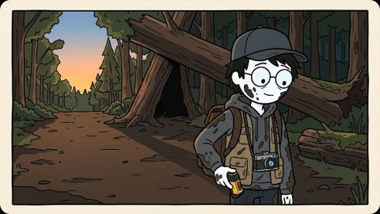

| 秒 | 聲音 | 層 | 優先 | 音量 | 為什麼 |
|---|---|---|---|---|---|
| 0.3 | 電擊槍沒電的空按聲 | 事件 | optional | 小 | 笑點：按下開關卻只有一聲空按、沒有電流聲，對上旁白「……喀。電量，零」，用『該有電卻沒有』的反差加強笑果。 |

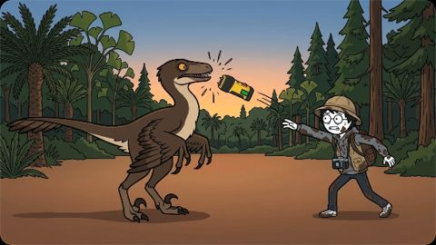
| 秒 | 聲音 | 層 | 優先 | 音量 | 為什麼 |
|---|---|---|---|---|---|
| 4.4 | 電擊槍打中頭的悶響 | 事件 | optional | 中 | 電擊槍丟出去正好打中盜龍額頭的悶響，放在旁白「打中牠的頭」講完後的空檔落下，剛好銜接下一格盜龍面無表情的『就這樣喔？』。 |
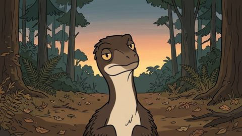

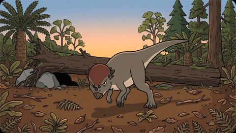

| 秒 | 聲音 | 層 | 優先 | 音量 | 為什麼 |
|---|---|---|---|---|---|
| 1.0～14-10 2.86 | 腫頭龍低頭衝刺的沉重腳步 | 事件 | optional | 小 | 腫頭龍低頭直衝的沉重腳步，帶出衝刺速度與重量，一路跨到 14-10 撞樹前戛然而止；旁白期間壓低避免搶話。 |
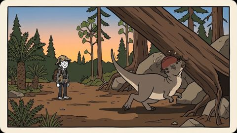
| 秒 | 聲音 | 層 | 優先 | 音量 | 為什麼 |
|---|---|---|---|---|---|
| 2.9～14-11 0.6 | 撞上大樹幹的撞擊與木頭裂響 | 事件 | must | 大 | 全場高潮與最大物理笑點：腫頭龍整顆骨頂撞進大樹幹。放在旁白說完『……大樹幹』的瞬間落下當重音，少了這一撞笑點就垮了；餘響拖進下一格再淡出。 |
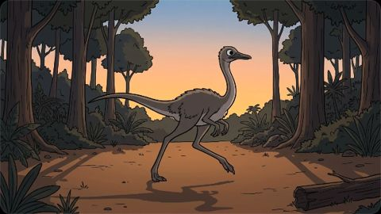

| 秒 | 聲音 | 層 | 優先 | 音量 | 為什麼 |
|---|---|---|---|---|---|
| 2.0 | 似鴕龍一口叼走帽子 | 事件 | optional | 小 | 帽子被一口叼走的瞬間——這之後主角整場（及後續）都是光頭，聲音點出這個造型轉變；在旁白下壓低為短促一下。 |
| 2.3 | HERO 雙手撲空的懊惱悶哼（無台詞） | 反應 | optional | 小 | 緊接叼帽、HERO 雙手撲空的懊惱悶哼（無台詞），強化撲空的喜感。 |

| 秒 | 聲音 | 層 | 優先 | 音量 | 為什麼 |
|---|---|---|---|---|---|
| 0.5 | HERO 驚恐倒抽一口氣（無台詞） | 反應 | optional | 小 | 被三隻恐龍團團圍住、蹲低抱頭的驚恐倒抽氣（無台詞），帶出被包圍的壓迫；旁白期間壓低。 |
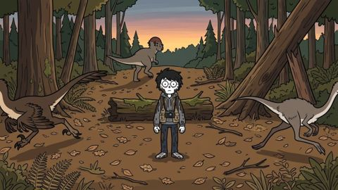
| 秒 | 聲音 | 層 | 優先 | 音量 | 為什麼 |
|---|---|---|---|---|---|
| 0.5～3.2 | 三隻恐龍同時爆衝四散的腳步 | 事件 | optional | 小 | 三隻恐龍同時往三個方向爆衝離開的腳步，之後立刻接 14-15 的全面靜默，用『一陣亂跑→突然安靜』做出反差。 |
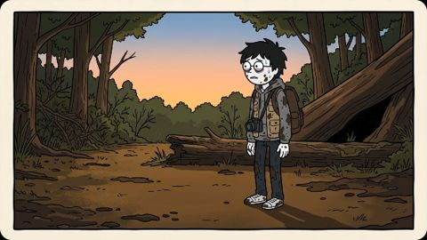
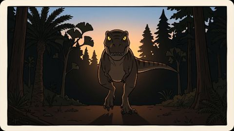
| 秒 | 聲音 | 層 | 優先 | 音量 | 為什麼 |
|---|---|---|---|---|---|
| 0.0～15.34 | 青少年暴龍低頻喉音與沉重呼吸 | 事件 | must | 小 | 大魔王登場：黑影裡青少年暴龍的低頻喉音與沉重呼吸墊在整段旁白底下，營造壓迫與危險。低頻不蓋旁白，但少了牠就沒有逼近感。 |
| 15.0～14-17 0.6 | 青少年暴龍低頻喉音與沉重呼吸 | 事件 | optional | 中 | 旁白講完、切到四目相對前補一記略大的低吼，把壓迫感頂上去，順勢推進 14-17 的對視。 |
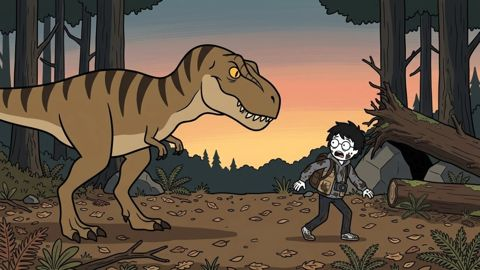
| 秒 | 聲音 | 層 | 優先 | 音量 | 為什麼 |
|---|---|---|---|---|---|
| 3.0～4.64 | HERO 起跑的喘息（無台詞） | 反應 | optional | 小 | 對上眼後『直接拔腿就跑』：起跑的喘息（無台詞），銜接下一場 EP1N-15 的逃命追逐，不做剪輯轉場音、用角色動作自然過場。 |
第 15 場 暫停講解：急轉彎（傍晚（定格）） 5 種聲音・6 個 cue
這是『定格講解』場：時間凍結＋抽象示意圖＋幾乎連續的旁白，所以不鋪環境音（時間停住鋪環境音反而怪）。真正重要的只有頭尾兩個定格轉場（凍結 15-01、恢復 15-12），恢復時帶一聲 TEEN 吼把觀眾拉回追逐；中段『急轉彎』是本場核心概念，在示意圖與 HERO 實作各墊一聲打滑，全部壓在旁白空檔或很小聲，確保旁白清楚。

| 秒 | 聲音 | 層 | 優先 | 音量 | 為什麼 |
|---|---|---|---|---|---|
| 0.0 | 定格凍結音（急停＋高頻凝住） | 轉場 | must | 中 | 本場開頭把追逐一瞬間凍結成對峙，是最關鍵的轉場；少了這一聲觀眾不知道畫面停住、也接不上旁白『定格。』。擺在 0.0 與定格瞬間同步，壓到 mid 讓 0.9 秒的旁白仍聽得清。 |


| 秒 | 聲音 | 層 | 優先 | 音量 | 為什麼 |
|---|---|---|---|---|---|
| 0.0 | HERO 驚恐倒吸一口氣 | 反應 | optional | 墊底 | 定格停在 HERO 驚恐張口喘氣的臉，墊一聲倒吸氣強化恐懼與『只好我們自己來』的轉折；壓到 bg 不蓋旁白，可有可無故列 optional。 |

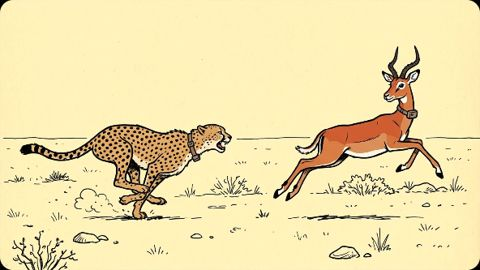

| 秒 | 聲音 | 層 | 優先 | 音量 | 為什麼 |
|---|---|---|---|---|---|
| 2.0 | 急煞轉彎打滑揚塵 | 事件 | optional | 小 | 本格是整場核心概念『最後一刻猛地急轉彎』的首次圖示（黑斑羚急轉揚塵），墊一聲打滑讓『轉彎甩開』更具體；低音量壓在旁白下方故 optional。 |


| 秒 | 聲音 | 層 | 優先 | 音量 | 為什麼 |
|---|---|---|---|---|---|
| 1.5 | 急煞轉彎打滑揚塵 | 事件 | optional | 小 | 第二招 HERO 急煞猛切、TEEN 衝過頭，是急轉概念套回主角身上的實作示範；重複同一聲打滑呼應前面，低音量不蓋旁白。 |
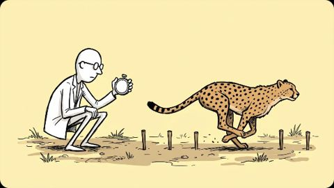

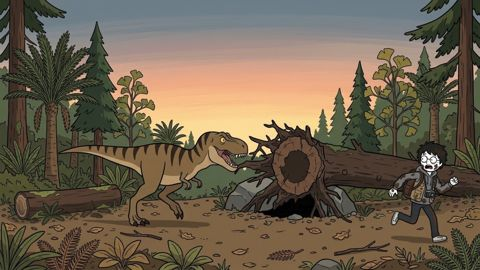
| 秒 | 聲音 | 層 | 優先 | 音量 | 為什麼 |
|---|---|---|---|---|---|
| 0.9～16-01 0.5 | 解除定格音（時間回流 whoosh） | 轉場 | must | 大 | 解除定格、動作恢復是本場收尾的關鍵轉場，whoosh 把凍結的畫面重新推進、銜接下一場追逐；擺在旁白（0–0.9）講完之後的空檔，可放到最大聲。 |
| 0.9～16-01 0.8 | TEEN（掠食恐龍）短促撲擊吼叫 | 事件 | optional | 大 | 恢復動作同一瞬間 TEEN 再度撲出，補一聲吼重建威脅、把觀眾從講解拉回生死追逐；排在旁白之後、與 whoosh 疊在一起帶進下一場，不擋旁白故列 optional。 |
第 16 場 白堊紀森林・爛泥巴小路（追逐）（黃昏） 12 種聲音・14 個 cue
黃昏森林追逐戲，環境音墊底、腳步與喘氣當持續texture；只在三個轉折點放 must：暴龍首次露齒逼近（咬合）、第一次急轉讓暴龍衝過頭、暴龍摔大跤。所有大聲音效都避開旁白、塞在句尾空檔或往下一格延伸。

| 秒 | 聲音 | 層 | 優先 | 音量 | 為什麼 |
|---|---|---|---|---|---|
| 0.0～16-10 7.46 | 黃昏森林環境音（蟲鳴、風吹枝葉） | 環境 | optional | 墊底 | 整場都在高大森林裡，環境是分鏡強調的重點，墊一段黃昏森林音讓追逐有空間感；全程很小聲不蓋旁白 |
| 0.0～4.84 | 泥地奔跑腳步聲（HERO） | 事件 | optional | 小 | 開場 HERO 泥地全速狂奔、泥巴四濺，腳步聲建立追逐節奏；腳步在後面幾格也持續，這裡引用同一個音 |
| 0.0～4.84 | HERO 上氣不接下氣的喘氣聲 | 反應 | optional | 小 | 分鏡寫 HERO 上氣不接下氣，喘氣聲強化力竭感；小聲墊在旁白下 |
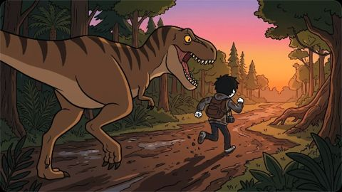
| 秒 | 聲音 | 層 | 優先 | 音量 | 為什麼 |
|---|---|---|---|---|---|
| 0.0～12.44 | 暴龍追逐的沉重踏步聲 | 事件 | optional | 小 | 暴龍越追越近，沉重踏步墊在旁白下讓『後面那個東西跑得比你快』有重量；小聲不蓋旁白 |
| 2.5～4.6 | 暴龍低沉逼近的喉音吼聲 | 事件 | must | 小 | 暴龍第一次真正逼近露面（嘴比整個人還大），一聲低吼點出怪物就在背後；壓在旁白下小聲，少了它這個首次揭露會太平 |
| 12.4 | 暴龍張口猛咬、牙齒咬合聲 | 事件 | must | 大 | 暴龍張口咬向 HERO 的瞬間、嘴比人還大，是本格高潮；放在旁白講完後的句尾空檔、延伸到下一格 HERO 落地，咬合聲串起『咬下→你一落地就繼續跑』的近身險象 |


| 秒 | 聲音 | 層 | 優先 | 音量 | 為什麼 |
|---|---|---|---|---|---|
| 0.5～5.36 | 暴龍在身後的粗重鼻息 | 事件 | optional | 小 | 旁白說『你聽得到牠在後面喘氣』，給一段粗重鼻息呼應臭味笑點；小聲墊在旁白下 |
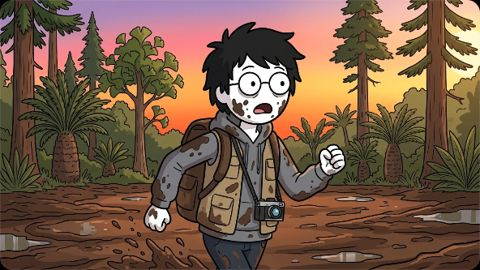

| 秒 | 聲音 | 層 | 優先 | 音量 | 為什麼 |
|---|---|---|---|---|---|
| 0.0～2.3 | HERO 急轉時泥地打滑急煞聲 | 事件 | optional | 小 | HERO 猛然急轉、泥地打滑，一聲急煞讓轉彎有實感；小聲在旁白下 |
| 2.6 | 暴龍煞不住衝過頭（風聲＋泥地刮滑） | 事件 | must | 大 | 第一次用博士教的『跑太快轉不了彎』讓暴龍衝過頭，是整場追逐的轉折笑點；放在旁白講完後，衝過頭的風聲＋刮地聲點出戰術奏效 |
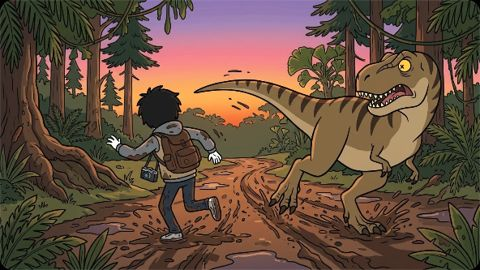
| 秒 | 聲音 | 層 | 優先 | 音量 | 為什麼 |
|---|---|---|---|---|---|
| 4.8 | 暴龍煞不住衝過頭（風聲＋泥地刮滑） | 事件 | optional | 中 | 第二次急轉、暴龍又衝過頭，是重複橋段，放在旁白講完後當加強；重複所以降為 optional、音量也放小一點 |

| 秒 | 聲音 | 層 | 優先 | 音量 | 為什麼 |
|---|---|---|---|---|---|
| 2.9 | 暴龍重重摔倒、身體著地滑行的撞擊聲 | 事件 | must | 大 | 暴龍狠狠摔一大跤、臉朝地滑出去，是追逐的喜劇高潮；放在旁白『摔了一大跤』講完的句尾、重撞聲延伸到下一格，少了它這個高潮完全不成立 |
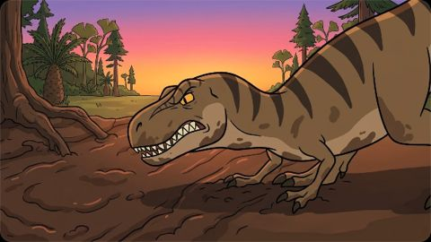
| 秒 | 聲音 | 層 | 優先 | 音量 | 為什麼 |
|---|---|---|---|---|---|
| 0.8～1.88 | 暴龍甩頭、前肢撐地重新爬起的掙扎聲 | 事件 | optional | 小 | 旁白『可是牠又爬了起來』，撐地掙扎聲呼應牠不放棄；小聲墊著，當轉回緊張的提示 |

| 秒 | 聲音 | 層 | 優先 | 音量 | 為什麼 |
|---|---|---|---|---|---|
| 0.0～7.16 | HERO 上氣不接下氣的喘氣聲 | 反應 | optional | 小 | 收尾 HERO 力竭仍硬撐著跑進森林，喘氣聲帶出疲憊；小聲在旁白下，引用開場同一個音 |
| 6.6 | 跑進森林深處、接下一場的過場風聲 | 轉場 | optional | 小 | HERO 越跑越小跑進森林深處，接下一場黃昏空地；一聲輕過場風聲幫忙換景，不加也行所以 optional |
第 17 場 降落點森林（甲龍那顆石頭）（黃昏） 16 種聲音・16 個 cue
這場是追逐的收尾與全集笑點，聲音重點在三個撞擊／揭露（暴龍撞石、石頭甦醒、尾錘打飛）和結尾時光隧道的開與關；旁白很滿，所有大聲的撞擊一律排在每格旁白講完後的空檔，腳步、喘氣、咀嚼、按鈕等全壓到很小墊著，不蓋旁白。

| 秒 | 聲音 | 層 | 優先 | 音量 | 為什麼 |
|---|---|---|---|---|---|
| 0.0～17-15 4.52 | 黃昏森林空地環境音 | 環境 | optional | 墊底 | 整場都在黃昏森林空地，墊一層氣氛音，追逐收尾的場景感；音量幾乎聽不到，不蓋旁白。 |
| 0.3～17-02 5.0 | HERO 筋疲力竭的喘氣聲 | 反應 | optional | 小 | HERO 筋疲力竭衝進空地、又縮到石頭後偷看追兵，喘氣強化『沒力了』的狀態；小聲墊在旁白下。 |

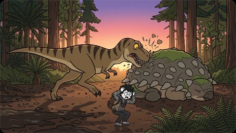
| 秒 | 聲音 | 層 | 優先 | 音量 | 為什麼 |
|---|---|---|---|---|---|
| 3.1～17-04 0.6 | 暴龍全速撞上石頭的重擊 | 事件 | must | 大 | 青少年暴龍煞不住一頭撞上石頭，是這段追逐的撞擊高潮，少了會很空；排在旁白（0～3.10）講完後的空檔。 |
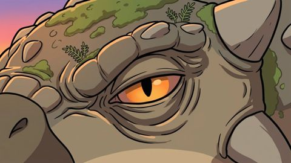
| 秒 | 聲音 | 層 | 優先 | 音量 | 為什麼 |
|---|---|---|---|---|---|
| 3.5～17-05 0.5 | 甲龍被吵醒的低沉不悅悶吼 | 事件 | must | 中 | 『石頭眨眼』是全場最大的反轉笑點，一聲低沉不悅的大型動物悶吼坐實『石頭是活的』；放旁白（0～3.54）後，不先爆雷。 |

| 秒 | 聲音 | 層 | 優先 | 音量 | 為什麼 |
|---|---|---|---|---|---|
| 3.0～3.5 | 尾錘揮出的破風聲 | 事件 | optional | 小 | 尾錘揮出的破風聲，替緊接的重擊鋪陳；旁白將結束前小聲帶過。 |
| 3.5～17-06 0.8 | 尾錘正中暴龍的重擊 | 事件 | must | 大 | 尾錘正中暴龍把牠整隻掃飛，是全場動作高潮；放旁白（0～3.54）後讓撞擊夠響。 |
| 3.6～17-06 1.0 | 青少年暴龍被打飛的慘叫 | 事件 | optional | 中 | 暴龍被打飛時的慘叫，加強被掃飛上天的衝擊與去向；疊在尾錘重擊後。 |
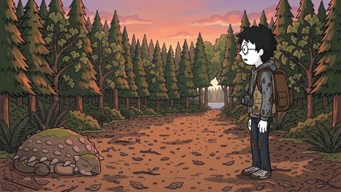
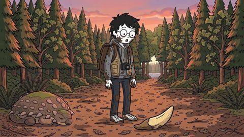
| 秒 | 聲音 | 層 | 優先 | 音量 | 為什麼 |
|---|---|---|---|---|---|
| 1.5 | 巨牙彈落到泥地的悶響 | 事件 | optional | 小 | 巨牙彈到腳邊落在泥地的悶響，對上旁白『彈到你的腳邊』；小聲不搶旁白。 |

| 秒 | 聲音 | 層 | 優先 | 音量 | 為什麼 |
|---|---|---|---|---|---|
| 2.0～4.5 | HERO 得意的無字笑聲 | 反應 | optional | 小 | HERO 舉牙得意，用無字笑聲表現『一開心』；小聲墊著當作下一拍相機掉落的對比。 |
| 6.1 | 相機掉進泥巴的噗聲 | 事件 | optional | 小 | 相機從胸前滑落掉進泥巴的噗聲，是他沒發現的笑點伏筆；放旁白（0～6.14）講完後。 |

| 秒 | 聲音 | 層 | 優先 | 音量 | 為什麼 |
|---|---|---|---|---|---|
| 2.0～3.5 | 洋芋片袋子窸窣聲 | 事件 | optional | 小 | HERO 從背包掏出一路捨不得吃的洋芋片，袋子窸窣聲帶出『遞洋芋片』的動作；小聲。 |

| 秒 | 聲音 | 層 | 優先 | 音量 | 為什麼 |
|---|---|---|---|---|---|
| 2.0～6.3 | 慢慢嚼洋芋片的咀嚼聲 | 事件 | optional | 小 | 甲龍面無表情慢慢嚼洋芋片是收尾笑點，咀嚼聲坐實『真的在吃』；壓低墊在旁白下。 |

| 秒 | 聲音 | 層 | 優先 | 音量 | 為什麼 |
|---|---|---|---|---|---|
| 3.0～7.0 | 按按鈕的喀噠聲 | 事件 | optional | 小 | 按按鈕的喀噠聲（按兩次都沒反應），強化『怎麼沒反應』的無奈；對上旁白的兩次按壓，小聲。 |

| 秒 | 聲音 | 層 | 優先 | 音量 | 為什麼 |
|---|---|---|---|---|---|
| 4.6 | 用力拍打按鈕的一掌 | 事件 | optional | 中 | HERO 想起博士的招數用力拍一掌，callback『博士做的東西都要拍一下』；放旁白（0～4.62）後、接下一格隧道亮起。 |

| 秒 | 聲音 | 層 | 優先 | 音量 | 為什麼 |
|---|---|---|---|---|---|
| 0.8～5.48 | 時光隧道打開的嗡鳴 | 事件 | must | 小 | 按鈕亮起、藍色時光隧道打開是回家的關鍵劇情，必須聽得到；旁白正講到此處，用低音嗡鳴墊著不蓋旁白，到他跳進去時收尾。 |

| 秒 | 聲音 | 層 | 優先 | 音量 | 為什麼 |
|---|---|---|---|---|---|
| 2.6～17-15 1.0 | 時光隧道收合消失的收束聲 | 轉場 | must | 中 | 藍色隧道往內收合縮成一點消失，是離開當下世界、轉回家（下一場 HERO 癱在地上）的轉場音；放旁白（0～2.58）後，收束進留白的停頓。 |

第 18 場 博士的實驗室（晚上） 7 種聲音・8 個 cue
安靜的夜晚實驗室收尾場，以機器嗡嗡聲墊底。角色不說話，靠 PROF 的大笑和 HERO 結尾的無奈嘆氣撐戲；相機摔裂的揭露是笑點，給一下裂屏雜音。旁白幾乎鋪滿每格，吵的聲音都塞進句尾空檔。
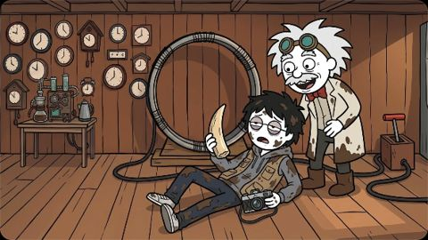
| 秒 | 聲音 | 層 | 優先 | 音量 | 為什麼 |
|---|---|---|---|---|---|
| 0.0～18-10 5.02 | 實驗室時光機低鳴嗡嗡聲 | 環境 | optional | 墊底 | 整場都在實驗室，時光機圓環在背景，墊一層極小的機器嗡嗡聲定住地點，不搶旁白。 |
| 3.4～18-02 2.2 | 博士開心的大笑（無台詞） | 反應 | must | 小 | PROF 俯身大笑是他第一次露出開心反應，角色沒有台詞，笑聲是他唯一的情緒表達；旁白『開心得不得了』正好配上，壓低音量從句尾空檔接進去。 |
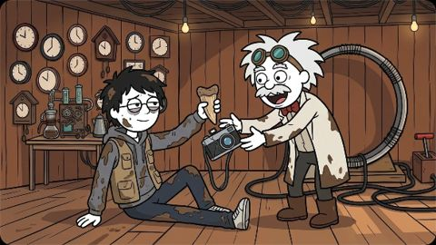
| 秒 | 聲音 | 層 | 優先 | 音量 | 為什麼 |
|---|---|---|---|---|---|
| 3.3 | 牙齒與相機交到手上的碰觸聲 | 事件 | optional | 小 | 牙齒和相機交到 PROF 手上的瞬間給一下碰觸聲，放在旁白講完後的句尾空檔，點出『交付』動作。 |

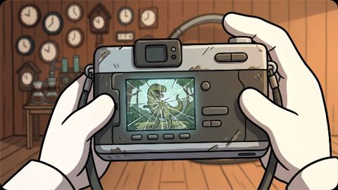
| 秒 | 聲音 | 層 | 優先 | 音量 | 為什麼 |
|---|---|---|---|---|---|
| 4.7 | 摔裂相機的碎屏雜音與零件鬆動聲 | 事件 | must | 中 | 相機摔裂是這場的笑點揭露，旁白『已經不太算是相機了』講完後補一下裂屏雜音與零件鬆動聲，坐實『壞掉』的揭露，放在句尾空檔不蓋旁白。 |
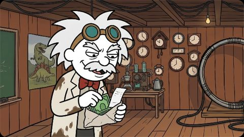
| 秒 | 聲音 | 層 | 優先 | 音量 | 為什麼 |
|---|---|---|---|---|---|
| 0.8～2.2 | 抽紙鈔／收據／任務單的紙張摩擦聲 | 事件 | optional | 小 | 鈔票被抽出、收據塞進信封的偷換動作，小聲的紙張摩擦聲墊在旁白底下強化『抽走換成收據』的手感。 |

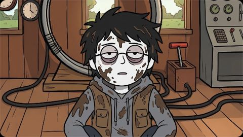

| 秒 | 聲音 | 層 | 優先 | 音量 | 為什麼 |
|---|---|---|---|---|---|
| 0.6～2.0 | 抽紙鈔／收據／任務單的紙張摩擦聲 | 事件 | optional | 小 | PROF 從外套掏出下一張任務單，紙張聲配合『又拿出下一張任務單』的動作，提示新任務登場。 |
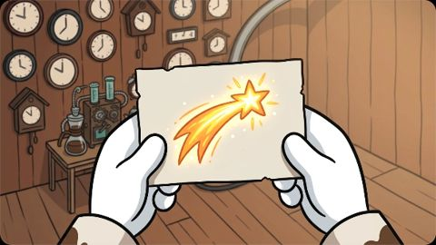

| 秒 | 聲音 | 層 | 優先 | 音量 | 為什麼 |
|---|---|---|---|---|---|
| 4.6 | HERO 無奈翻白眼的嘆氣（無台詞） | 反應 | must | 中 | 收尾 HERO 仰頭翻白眼、對空頭支票一臉無奈，角色沒台詞，一聲嘆氣是他唯一能收這個笑點的反應，放在旁白講完後的空檔。 |
| 4.9～19-01 0.6 | 跳到下一場的轉場聲（紙張翻過／時間流逝） | 轉場 | optional | 小 | 本場結束要跳到下一場的逾期帳單，給一個輕轉場聲帶過時間流逝，銜接『又欠一筆』的後續。 |
第 19 場 HERO 的房間（晚上） 3 種聲音・3 個 cue
安靜的夜晚房間，兩張定格。只在兩個情緒重點放短音效：帳單上「剛蓋上的逾期章」像判刑的落章聲，以及滿格電手機的充電提示聲（反差笑點）；底下可墊極小聲的夜間房間環境音避免死寂。
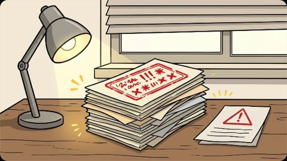
| 秒 | 聲音 | 層 | 優先 | 音量 | 為什麼 |
|---|---|---|---|---|---|
| 0.0～19-02 2.64 | 夜晚安靜房間環境音（含檯燈微弱電流嗡聲） | 環境 | optional | 墊底 | 整場是夜晚的房間，墊一層極小聲的房間底噪＋檯燈嗡聲讓畫面不至於死寂；旁白期間保持 bg 不搶旁白。 |
| 2.4 | 橡皮逾期章蓋在紙上的落章聲 | 事件 | must | 中 | 這格的戲眼是「剛蓋上的紅色逾期章，像又被判了一次刑」。一聲乾脆的落章聲正好落在旁白『又多了一張帳單』講完的空檔（2.42～2.72），替這個判刑式的隱喻收尾，少了它這張定格就只是張靜圖。 |

| 秒 | 聲音 | 層 | 優先 | 音量 | 為什麼 |
|---|---|---|---|---|---|
| 2.3 | 手機充電／滿電提示聲 | 事件 | optional | 小 | 全家當裡唯一滿的就是手機電量，是跟前一張帳單的反差笑點。旁白『手機的電是充飽的』講完後（2.34～2.64）補一聲充電滿格提示，點一下這個反差；不放也能看懂，所以歸 optional。 |
第 20 場 插圖：下一集預告（小行星飛向地球）（—） 4 種聲音・5 個 cue
下一集預告的空景插圖，沒有角色所以沒有反應音；重點是讓遠方小行星的威脅從「幾乎聽不到」一路長大，最後在火球壓向鏡頭的定格瞬間用一記火焰轟鳴收尾當懸念。旁白幾乎鋪滿兩格，大聲的火焰轟鳴只放在第二格旁白講完後的空檔。

| 秒 | 聲音 | 層 | 優先 | 音量 | 為什麼 |
|---|---|---|---|---|---|
| 0.0～20-02 4.56 | 白堊紀夜空環境底噪（低風聲／夜蟲） | 環境 | optional | 墊底 | 整段預告墊一層安靜的夜空底噪，讓遼闊夜空有氣氛；安靜空景可有可無，歸 optional |
| 0.0～1.2 | 「下一集」預告轉場上揚聲 | 轉場 | optional | 小 | 旁白一開口就是「下一集」，用一記小聲上揚聲點出這是預告轉場；音量壓低不蓋旁白，不放也行 |
| 1.0～5.2 | 小行星逼近的低頻呼嘯／悶雷轟隆 | 事件 | must | 墊底 | 小行星第一次出現在夜空深處，用幾乎聽不到的低頻呼嘯讓那個小亮點「有東西在來」的威脅感成立；旁白進行中所以壓到 bg |
| 秒 | 聲音 | 層 | 優先 | 音量 | 為什麼 |
|---|---|---|---|---|---|
| 0.0～4.26 | 小行星逼近的低頻呼嘯／悶雷轟隆 | 事件 | must | 小 | 同一顆已經逼近變大，呼嘯轟隆接著長大、音量升到 low，撐住「越來越近」的壓迫；仍在旁白時間內所以不超過 low，結束在旁白講完的 4.26 秒讓位給火焰轟鳴 |
| 4.3 | 大火球燃燒轟鳴 | 事件 | must | 大 | 整集的懸念高潮：火球壓向鏡頭的定格瞬間用一記大聲火焰轟鳴收尾；刻意放在旁白（0~4.26）講完後的空檔，不蓋旁白，讓觀眾帶著威脅感結束這一集 |
聲音一覽①②
| 聲音 | 層 | 搜尋關鍵字 | 生成備案（TangoFlux） | 素材・試聽 |
|---|---|---|---|---|
| 第 1 場 白堊紀森林・爛泥巴小路（冷開場追逐） | ||||
黃昏森林環境音forest_dusk_ambience | 環境 | forest ambience evening jungle atmosphere birds forest wind trees | — | ② 素材還沒做 |
泥地奔跑腳步聲（HERO）hero_run_mud | 事件 | running footsteps mud run mud squelch jogging footsteps wet dirt | — | ② 素材還沒做 |
大型恐龍奔跑踏步聲（TEEN）dino_stomp | 事件 | heavy creature footsteps thud large animal running stomp elephant running footsteps | a large two-legged predatory dinosaur running, heavy muscular footfalls thudding on wet mud, carrying body weight, rhythmic | ② 素材還沒做 |
恐龍吼叫／咆哮（TEEN）dino_roar | 事件 | dinosaur roar monster roar snarl large creature growl roar | a large predatory dinosaur roaring with open jaws, deep guttural and threatening, lunging close to camera | ② 素材還沒做 |
恐龍咬合／合嘴聲dino_snap | 事件 | jaw snap bite animal mouth snap teeth crocodile bite snap | large dinosaur jaws snapping shut, a wet heavy clap of big teeth | ② 素材還沒做 |
HERO 拚命喘氣（無台詞）hero_panting | 反應 | man panting running exhausted breathing run heavy breathing male | — | ② 素材還沒做 |
HERO 驚恐短叫（無台詞）hero_scream | 反應 | man scared yelp male panic shout terrified gasp male | — | ② 素材還沒做 |
定格凍結轉場音freeze_stinger | 轉場 | freeze frame whoosh time stop sound cinematic stinger impact | a time-freeze transition, swelling whoosh that snaps into sudden reverberant silence, cinematic | ② 素材還沒做 |
| 第 2 場 HERO 的房間 | ||||
清晨小套房室內墊底音room_tone | 環境 | quiet room tone morning bedroom ambience room tone indoor | — | ② 素材還沒做 |
手機訊息提示音／震動phone_notify | 事件 | phone notification ding text message alert phone vibrate buzz | — | ② 素材還沒做 |
開門聲（轉門把、門打開）door_open | 事件 | door handle turn open interior door open creak open door | — | ② 素材還沒做 |
半信半疑的鼻音（哼）grunt_skeptic | 反應 | male unimpressed hmph annoyed grunt male skeptical grunt | — | ② 素材還沒做 |
疲憊／喪氣的嘆氣sigh_tired | 反應 | male tired sigh exhausted sigh breath man sigh defeated | — | ② 素材還沒做 |
| 第 3 場 校園・校務大樓旁的研究小屋外 | ||||
校園早晨環境音（鳥鳴、微風、遠處人聲）campus_morning_amb | 環境 | campus morning ambience park birds light wind quiet morning outdoor ambience | — | ② 素材還沒做 |
步道上緩慢拖沓的腳步聲footsteps_walk | 事件 | slow footsteps pavement tired walking footsteps footsteps concrete path | — | ② 素材還沒做 |
疲憊的嘆氣（男性，無台詞）tired_sigh | 反應 | male tired sigh weary exhale reluctant sigh | — | ② 素材還沒做 |
緊張的吞口水／屏息（男性，無台詞）nervous_gulp | 反應 | nervous gulp swallow hesitant breath hold anxious inhale male | — | ② 素材還沒做 |
手碰到老舊金屬門把的輕響door_handle | 事件 | old metal door handle touch door knob creak light hand on door handle | — | ② 素材還沒做 |
| 第 4 場 博士的實驗室（研究小屋一樓） | ||||
實驗室／時光機低頻嗡嗡聲lab_hum | 環境 | machine hum loop electrical equipment hum sci-fi machine hum | a low steady electronic hum of a strange home-made time machine standing in a small cabin lab, faint and continuous | ② 素材還沒做 |
手機滑動／點按聲phone_swipe | 事件 | smartphone screen tap phone swipe ui touchscreen tap | — | ② 素材還沒做 |
粉筆在黑板上畫線聲chalk_write | 事件 | chalk writing blackboard chalk drawing board chalk squeak | — | ② 素材還沒做 |
HERO 誇張打哈欠（無台詞）yawn | 反應 | male yawn tired man yawn big yawn | — | ② 素材還沒做 |
急轉身的風聲turn_whoosh | 事件 | whoosh movement fast body turn whoosh swoosh short | — | ② 素材還沒做 |
PROF 閃到腰的悶哼（無台詞）back_grunt | 反應 | man grunt pain male groan hurt back pain groan | — | ② 素材還沒做 |
小推車滾動聲cart_roll | 事件 | cart rolling wheels trolley roll floor squeaky cart wheels | — | ② 素材還沒做 |
洋芋片袋被抓起的沙沙聲chip_bag | 事件 | chip bag rustle crisp packet crinkle snack bag grab | — | ② 素材還沒做 |
金屬拉桿被用力拉下的喀聲lever_pull | 事件 | metal lever pull big switch lever clunk machine lever pull | — | ② 素材還沒做 |
拳頭／手掌用力拍打金屬機器machine_slap | 事件 | hand slap metal bang metal panel hit metal machine | — | ② 素材還沒做 |
| 第 5 場 插圖：六千六百五十萬年前的北美洲 | ||||
高空／空曠大地的微弱空氣聲map_air_ambience | 環境 | high altitude wind ambience soft airy drone ambience wide open space wind faint | — | ② 素材還沒做 |
森林裡的藍光閃現（時空降落）blue_light | 轉場 | magic shimmer sparkle sci-fi portal whoosh time warp whoosh | a soft ethereal sci-fi blue light shimmer with a short rising time-warp whoosh, magical, airy, lands with a gentle sparkle | ② 素材還沒做 |
| 第 6 場 降落點森林 | ||||
悶熱森林環境音（鳥、蟲、濕氣）forest_ambience | 環境 | jungle ambience birds insects tropical forest ambience humid rainforest background loop | — | ② 素材還沒做 |
身體臉朝下摔進泥地的悶響body_mud_splat | 事件 | body fall mud splat face plant mud squelch heavy thud wet ground | — | ② 素材還沒做 |
時光隧道藍光收合、關閉的聲音portal_close | 轉場 | sci-fi portal close whoosh energy power down hum teleport close reverse whoosh | A shimmering blue time-portal collapsing and sealing shut, an electric hum sucking inward then powering down | ② 素材還沒做 |
蚊子在耳邊臉前嗡嗡飛mosquito_buzz | 事件 | mosquito buzzing close ear single mosquito whine insect buzz annoying | — | ② 素材還沒做 |
手機送出搜尋的輕點／UI 音phone_tap | 事件 | phone screen tap ui smartphone button tap ui touch beep soft | — | ② 素材還沒做 |
撥開及腰蕨葉的沙沙聲fern_rustle | 事件 | leaves rustle push through foliage bush rustle plants brush movement | — | ② 素材還沒做 |
大型動物沉睡的緩慢呼吸／低鼾（甲龍）anky_snore | 事件 | large animal sleeping breathing deep big animal snore low rumble slow heavy breathing snore | A huge reptilian dinosaur fast asleep, slow deep rumbling breaths and a low gravelly snore, heavy and massive | ② 素材還沒做 |
爬蟲類眼睛睜開眨動的濕潤聲anky_eye_blink | 事件 | wet eye blink squish slimy small squish eyelid open moist | A large reptile eyelid peeling open, a soft wet leathery blink, quiet and organic | ② 素材還沒做 |
HERO 嚇到倒抽一口氣hero_gasp | 反應 | male sharp gasp inhale surprised gasp breath scared quick inhale | — | ② 素材還沒做 |
踮腳尖偷溜的輕腳步tiptoe_sneak | 事件 | tiptoe sneaking footsteps sneaky soft footsteps careful quiet steps | — | ② 素材還沒做 |
打開背包／拉鍊翻找的聲音backpack_open | 事件 | backpack zipper open bag rummage fabric unzip bag rustle | — | ② 素材還沒做 |
遠處傳來的流水／溪聲water_stream | 事件 | distant river stream flowing water flowing creek far stream water ambience | — | ② 素材還沒做 |
| 第 7 場 河岸 | ||||
寬闊河流緩緩流動的環境音river_ambience | 環境 | river flowing ambience wide stream water flow riverbank ambience calm | — | ② 素材還沒做 |
對岸鴨嘴龍群溫和的遠處低鳴hadrosaur_herd | 事件 | large animal grunt distant cattle low moo distant elephant rumble distant | a small herd of large gentle duck-billed dinosaurs making soft low honking rumbles while drinking at a river, heard from across the water, calm and distant | ② 素材還沒做 |
相機快門喀嚓聲camera_shutter | 事件 | camera shutter click dslr shutter single camera photo click | — | ② 素材還沒做 |
HERO 無奈的嘆氣hero_sigh | 反應 | man sigh disappointed male exhale sigh resigned breath out | — | ② 素材還沒做 |
| 第 8 場 暫停講解：地獄溪（從河岸拉高到整片北美洲，再看今天的荒地） | ||||
定格急停音（唱盤急停／突然靜止）freeze_hit | 轉場 | record scratch stop freeze frame hit cartoon sudden stop | — | ② 素材還沒做 |
鏡頭向上拉高的呼嘯聲ascend_whoosh | 轉場 | whoosh ascend camera rise whoosh swoosh up air | — | ② 素材還沒做 |
時間跳轉／穿越轉場（史前跳到今天）time_jump | 轉場 | time warp transition time travel whoosh time jump sweep | a sweeping time-travel transition whoosh signalling a jump of 66 million years from a lush prehistoric floodplain to a dry present-day badland | ② 素材還沒做 |
鏡頭從太空降回地面的呼嘯聲descend_whoosh | 轉場 | whoosh descend swoosh down air camera drop whoosh | — | ② 素材還沒做 |
河岸環境音（流水、微風）river_ambience | 環境 | river bank ambience gentle river flowing riverside nature ambience | — | ② 素材還沒做 |
乾燥荒地的風聲badlands_wind | 環境 | desert wind ambience dry wind barren land wind badlands | — | ② 素材還沒做 |
刷子刷掉化石上泥土的聲音fossil_brush | 事件 | brushing dirt soft brush sweeping dust excavation brush | — | ② 素材還沒做 |
| 第 9 場 河岸蕨類叢 | ||||
河岸環境音（流水＋遠處水鳥）river_ambience | 環境 | river stream ambience riverbank nature background forest river ambience | — | ② 素材還沒做 |
暴龍鼻孔用力嗅聞聲trex_sniff | 事件 | large animal sniffing big beast snort sniff elephant nostril breath | deep heavy wet nostril sniffing of a huge predatory dinosaur, slow inhale, close up, menacing | ② 素材還沒做 |
暴龍低沉胸腔呼吸、悶吼trex_breath_rumble | 事件 | large predator breathing low deep animal breathing growl monster low breathing | slow deep rumbling breathing of a giant tyrannosaur, low chest growl between breaths, heavy and calm | ② 素材還沒做 |
暴龍張口威嚇低吼trex_roar_growl | 事件 | dinosaur roar large beast roar growl monster roar | menacing low roar-growl of a giant tyrannosaurus rex opening its jaws, threatening, huge and resonant | ② 素材還沒做 |
巨顎咬合、牙齒相撞（咬空）teeth_snap | 事件 | jaw snap bite teeth clack snap alligator jaw snap | huge dinosaur jaws snapping shut on empty air, one loud bony teeth clack, powerful whoosh then clack | ② 素材還沒做 |
細樹被壓彎的吱嘎聲tree_creak_bend | 事件 | tree creak bend thin wood bending groan branch creak | — | ② 素材還沒做 |
HERO 驚恐短尖叫（無台詞）hero_scream | 反應 | man scream short male yelp fright guy screaming scared | — | ② 素材還沒做 |
HERO 倒吸一口氣（無台詞）hero_gasp | 反應 | man gasp inhale male scared gasp sharp breath fright | — | ② 素材還沒做 |
HERO 拔腿奔跑腳步run_footsteps | 事件 | running footsteps dirt man running fast footsteps running mud | — | ② 素材還沒做 |
對岸鴨嘴龍群警覺的集體叫聲herd_alert | 反應 | geese honk alarm bird flock alert call animal herd call | a herd of duck-billed dinosaurs suddenly lifting their heads, soft low alert honking calls across a wide river | ② 素材還沒做 |
| 第 10 場 暫停講解：暴龍的眼睛和鼻子 | ||||
定格暫停音（唱片急停／定格）freeze_pause | 轉場 | record scratch stop freeze frame sound tape stop | — | ② 素材還沒做 |
暴龍用力嗅聞（大鼻孔吸氣）trex_sniff | 事件 | large animal snort sniff big animal nose breathing horse snort | Huge dinosaur nostril sniff, heavy wet inhale through enormous nostrils, low and resonant, close up | ② 素材還沒做 |
暴龍逼近的低沉吐息／悶吼trex_breath | 事件 | lion low growl breath big cat deep growl large animal deep exhale | Massive T-rex low menacing exhale and guttural growl, deep chest resonance, heavy and close to the listener | ② 素材還沒做 |
| 第 11 場 林間小路・倒下的樹幹 | ||||
林間小路環境音（鳥鳴、風吹樹葉）forest_amb | 環境 | forest ambience birds woodland wind leaves | — | ② 素材還沒做 |
巨型暴龍沉重踏步、地面震動trex_stomp | 事件 | heavy footstep thud monster stomp ground shake deep impact boom | a massive seven-ton dinosaur's heavy footsteps, each stomp a deep ground-shaking thud with a low rumble | ② 素材還沒做 |
巨型暴龍吃力的大口喘氣trex_pant | 事件 | large animal heavy breathing monster panting breath big creature exhausted breath | a huge exhausted dinosaur breathing heavily, deep labored open-mouth panting with a faint low growl on each exhale | ② 素材還沒做 |
HERO 奔跑中急促喘氣（無台詞）hero_pant | 反應 | man panting running person out of breath gasp | — | ② 素材還沒做 |
小相機快門喀嚓聲camera_shutter | 事件 | camera shutter click dslr single shot click | — | ② 素材還沒做 |
HERO 得意的短促哼笑（無台詞）hero_taunt | 反應 | man triumphant huff playful cocky grunt | — | ② 素材還沒做 |
定格瞬間的頓音（短促撞擊＋凝結感）freeze_hit | 轉場 | freeze frame hit cinematic impact stab braam short hit | a short punchy freeze-frame impact, a tight thud that suddenly stops and holds | ② 素材還沒做 |
| 第 12 場 暫停講解：為什麼大恐龍跑不快 | ||||
劇情定格轉場音（唱片急停／時間凍結）freeze_in | 轉場 | record scratch stop freeze frame whoosh time stop sound effect | — | ② 素材還沒做 |
解除定格、時間恢復流動的轉場音resume_whoosh | 轉場 | time resume whoosh reverse whoosh transition unfreeze swoosh | — | ② 素材還沒做 |
暴龍喘到不行的沉重喘氣聲trex_pant | 反應 | large animal heavy breathing exhausted creature panting monster breathing low growl | Exhausted giant predatory dinosaur panting heavily after a chase, deep raspy out-of-breath breaths with a low throat rumble, tired and defeated. | ② 素材還沒做 |
巨大暴龍像石頭直墜、重重砸進礦井底的撞擊trex_fall_slam | 事件 | heavy body impact thud large impact boom debris heavy cartoon slam dust | A nine-ton creature slamming straight down hard into the bottom of a deep narrow pit, huge dull cartoonish boom with a puff of debris and dust. | ② 素材還沒做 |
森林環境音（鳥叫、枝葉）forest_amb | 環境 | forest ambience birds woodland ambience leaves quiet forest background | — | ② 素材還沒做 |
| 第 13 場 乾河床 | ||||
午後乾河床環境音（遠處流水、蟲鳴鳥叫，無風）riverbed_ambience | 環境 | river distant ambience calm forest birds insects afternoon small creek nature background | — | ② 素材還沒做 |
乾河床走路腳步聲（碎石乾沙）walk_gravel | 事件 | footsteps gravel walking walking dry sand footsteps footsteps dirt riverbed | — | ② 素材還沒做 |
HERO 悠哉吹口哨whistle | 反應 | casual whistling tune person whistling happy whistle walking carefree | — | ② 素材還沒做 |
手機自拍快門聲camera_shutter | 事件 | phone camera shutter click smartphone photo snap | — | ② 素材還沒做 |
HERO 受驚倒抽一口氣（笑容僵住）breath_catch | 反應 | sharp gasp inhale scared breath catch startled gasp male | — | ② 素材還沒做 |
身後蕨類被撥動的沙沙聲fern_rustle | 事件 | bush leaves rustle movement foliage rustle single plant leaves rustle close | — | ② 素材還沒做 |
| 第 14 場 森林空地 | ||||
黃昏森林蟲鳴鳥叫環境音forest_dusk_bugs | 環境 | forest evening ambience insects dusk forest birds crickets woodland ambience bugs | — | ② 素材還沒做 |
盜龍羽毛炸開與低嘶吼raptor_vocal | 事件 | raptor screech dinosaur bird of prey screech aggressive reptile hiss | A feathered raptor dinosaur flaring its feathers with a low aggressive hiss and screech, bird-reptile vocalization | ② 素材還沒做 |
電擊槍沒電的空按聲stun_click_dead | 事件 | switch click dead taser trigger click plastic button click | — | ② 素材還沒做 |
電擊槍打中頭的悶響throw_thunk | 事件 | object hit head thud light hollow bonk small impact thunk | — | ② 素材還沒做 |
腫頭龍低頭衝刺的沉重腳步pachy_charge_steps | 事件 | heavy footsteps charge large animal running thuds big creature gallop | Heavy two-legged dinosaur galloping charge, thudding weighty footfalls building up | ② 素材還沒做 |
撞上大樹幹的撞擊與木頭裂響wood_crash | 事件 | heavy body slam wood tree trunk hit crack wood crash impact | — | ② 素材還沒做 |
似鴕龍一口叼走帽子struthio_snatch | 事件 | bird beak snap quick snatch whoosh fabric grab peck | A large ostrich-like dinosaur quickly snatching a cloth hat with its beak, fast grab | ② 素材還沒做 |
三隻恐龍同時爆衝四散的腳步dino_scatter_run | 事件 | animals running away stampede footsteps flee multiple heavy footfalls | Several large two-legged dinosaurs bursting away in different directions at once, rapid scattering thuds | ② 素材還沒做 |
青少年暴龍低頻喉音與沉重呼吸teen_trex_growl | 事件 | dinosaur low growl rumble predator deep breathing big cat low growl | A young T-rex low menacing growl and deep heavy breathing lurking in shadow, large predator rumble | ② 素材還沒做 |
HERO 驚恐倒抽一口氣（無台詞）hero_gasp | 反應 | man gasp startle male scared inhale person frightened gasp | — | ② 素材還沒做 |
HERO 雙手撲空的懊惱悶哼（無台詞）hero_whiff | 反應 | man short grunt male frustrated grunt disappointed huff | — | ② 素材還沒做 |
HERO 起跑的喘息（無台詞）hero_run_pant | 反應 | man running panting male breathing run person panting fast | — | ② 素材還沒做 |
| 第 15 場 暫停講解：急轉彎 | ||||
定格凍結音（急停＋高頻凝住）freeze_in | 轉場 | freeze frame sound effect time stop impact record scratch stop | sudden time-freeze stinger: a sharp whoosh slamming into a sustained frozen high tone, everything stops | ② 素材還沒做 |
解除定格音（時間回流 whoosh）freeze_out | 轉場 | whoosh transition time resume swoosh reverse whoosh | time un-freeze whoosh, sound and motion rushing back in, releasing the frozen moment into action | ② 素材還沒做 |
TEEN（掠食恐龍）短促撲擊吼叫teen_snarl | 事件 | dinosaur snarl growl trex roar short deep monster growl | short aggressive theropod dinosaur snarl, deep and heavy with weight, lunging attack | ② 素材還沒做 |
HERO 驚恐倒吸一口氣hero_gasp | 反應 | male gasp fear scared sharp breath in person gasp short | — | ② 素材還沒做 |
急煞轉彎打滑揚塵skid_turn | 事件 | foot skid dirt slide stop gravel skid dust ground | — | ② 素材還沒做 |
| 第 16 場 白堊紀森林・爛泥巴小路（追逐） | ||||
黃昏森林環境音（蟲鳴、風吹枝葉）forest_dusk_ambience | 環境 | forest ambience evening jungle dusk insects wind forest background birds | — | ② 素材還沒做 |
泥地奔跑腳步聲（HERO）run_mud | 事件 | running footsteps mud run mud squelch sprint footsteps wet ground | — | ② 素材還沒做 |
HERO 上氣不接下氣的喘氣聲hero_pant | 反應 | man breathing heavy exhausted panting out of breath male running panting | — | ② 素材還沒做 |
暴龍追逐的沉重踏步聲dino_stomp | 事件 | heavy monster footsteps thud large creature stomp ground elephant footsteps heavy | Huge two-legged predator dinosaur running footsteps on muddy forest ground, deep heavy thuds with low rumble and mud splatter, each step shaking the ground, steady fast chase rhythm | ② 素材還沒做 |
暴龍低沉逼近的喉音吼聲dino_growl | 事件 | big cat growl deep lion low growl angry monster growl rumble | Large predatory dinosaur low menacing growl while chasing, deep chest rumble, wet throaty snarl, threatening and close | ② 素材還沒做 |
暴龍張口猛咬、牙齒咬合聲dino_bite_snap | 事件 | crocodile jaw snap bite animal teeth chomp snap big bite snap | Giant dinosaur jaws snapping shut hard just missing prey, fast whoosh then sharp wet teeth clack and chomp, huge and heavy | ② 素材還沒做 |
暴龍在身後的粗重鼻息dino_breath | 事件 | large animal heavy breathing beast snorting breath horse snort heavy breath | Large predator heavy wet breathing and snorting right behind, deep raspy exhales, warm and close | ② 素材還沒做 |
暴龍煞不住衝過頭（風聲＋泥地刮滑）dino_rush_by | 事件 | whoosh pass by fast heavy skid dirt slide large body rush past whoosh | Huge dinosaur unable to brake, rushing past with a heavy whoosh then claws skidding and sliding across muddy ground overshooting the turn | ② 素材還沒做 |
HERO 急轉時泥地打滑急煞聲mud_skid | 事件 | foot skid mud slide shoe slide wet ground quick skid dirt | — | ② 素材還沒做 |
暴龍重重摔倒、身體著地滑行的撞擊聲dino_fall_crash | 事件 | large body fall thud mud heavy crash ground impact big thud slide dirt | Enormous dinosaur tripping and crashing face-first into muddy ground, massive heavy body impact thud followed by belly sliding through mud, dirt spray | ② 素材還沒做 |
暴龍甩頭、前肢撐地重新爬起的掙扎聲dino_getup_scrabble | 事件 | large animal get up struggle beast scramble dirt heavy body shuffle ground | Large dinosaur shaking its head and pushing itself back up off muddy ground, scuffling clawed limbs, low annoyed grunt | ② 素材還沒做 |
跑進森林深處、接下一場的過場風聲transition_whoosh | 轉場 | whoosh transition soft forest wind swell whoosh scene transition swoosh | — | ② 素材還沒做 |
| 第 17 場 降落點森林（甲龍那顆石頭） | ||||
黃昏森林空地環境音forest_dusk | 環境 | forest evening ambience dusk woodland crickets birds | — | ② 素材還沒做 |
HERO 筋疲力竭的喘氣聲hero_pant | 反應 | exhausted heavy breathing out of breath panting male | — | ② 素材還沒做 |
暴龍全速撞上石頭的重擊dino_smash | 事件 | heavy body slam impact large crash thud | — | ② 素材還沒做 |
甲龍被吵醒的低沉不悅悶吼anky_grumble | 事件 | large animal low growl monster grumble deep | A deep, slow, annoyed low-frequency grumble of a large reptilian dinosaur waking up, heavy and rumbling | ② 素材還沒做 |
尾錘揮出的破風聲tail_whoosh | 事件 | heavy whoosh swing large object swing air | — | ② 素材還沒做 |
尾錘正中暴龍的重擊tail_club_hit | 事件 | heavy whack impact big blunt hit thump | — | ② 素材還沒做 |
青少年暴龍被打飛的慘叫teen_screech | 事件 | monster screech animal roar yelp | A sharp pained screech of a mid-sized dinosaur being knocked away, doppler trailing off as it flies | ② 素材還沒做 |
巨牙彈落到泥地的悶響tooth_thud | 事件 | object drop mud thud bone drop ground | — | ② 素材還沒做 |
相機掉進泥巴的噗聲camera_mud_plop | 事件 | object splat mud plop into mud | — | ② 素材還沒做 |
HERO 得意的無字笑聲hero_laugh | 反應 | man happy chuckle triumphant laugh no words | — | ② 素材還沒做 |
洋芋片袋子窸窣聲chip_bag | 事件 | potato chip bag rustle snack bag crinkle | — | ② 素材還沒做 |
慢慢嚼洋芋片的咀嚼聲chip_crunch | 事件 | eating chips crunch chewing crunchy snack | — | ② 素材還沒做 |
按按鈕的喀噠聲button_click | 事件 | plastic button click device push button | — | ② 素材還沒做 |
用力拍打按鈕的一掌tape_slap | 事件 | hand slap smack slap flat impact | — | ② 素材還沒做 |
時光隧道打開的嗡鳴portal_open | 事件 | magic portal whoosh sci-fi teleport hum open | A glowing blue time-portal opening: rising magical whoosh building into a steady electric hum | ② 素材還沒做 |
時光隧道收合消失的收束聲portal_close | 轉場 | portal close whoosh teleport power down collapse | A blue time-portal collapsing inward to a single point and vanishing: whoosh winding down into silence | ② 素材還沒做 |
| 第 18 場 博士的實驗室 | ||||
實驗室時光機低鳴嗡嗡聲lab_hum | 環境 | machine hum loop sci-fi device idle hum electrical room hum | — | ② 素材還沒做 |
博士開心的大笑（無台詞）prof_laugh | 反應 | happy man laugh delighted chuckle male cheerful laughter | — | ② 素材還沒做 |
摔裂相機的碎屏雜音與零件鬆動聲camera_broken | 事件 | cracked screen glitch broken electronics rattle glass crackle debris | — | ② 素材還沒做 |
抽紙鈔／收據／任務單的紙張摩擦聲paper_handle | 事件 | paper rustle handling pull money envelope paper slip out | — | ② 素材還沒做 |
牙齒與相機交到手上的碰觸聲items_clink | 事件 | small objects handover bone and plastic clink hand off items thud | — | ② 素材還沒做 |
HERO 無奈翻白眼的嘆氣（無台詞）hero_sigh | 反應 | exasperated sigh male annoyed exhale tired groan sigh | — | ② 素材還沒做 |
跳到下一場的轉場聲（紙張翻過／時間流逝）time_whoosh | 轉場 | page turn whoosh transition swoosh soft time passing whoosh | — | ② 素材還沒做 |
| 第 19 場 HERO 的房間 | ||||
夜晚安靜房間環境音（含檯燈微弱電流嗡聲）room_tone_night | 環境 | quiet room tone night indoor ambience silence desk lamp hum low | — | ② 素材還沒做 |
橡皮逾期章蓋在紙上的落章聲overdue_stamp | 事件 | rubber stamp thud ink stamp paper office stamp slam | — | ② 素材還沒做 |
手機充電／滿電提示聲phone_full_chime | 事件 | phone charging chime battery full notification smartphone short beep | — | ② 素材還沒做 |
| 第 20 場 插圖：下一集預告（小行星飛向地球） | ||||
白堊紀夜空環境底噪（低風聲／夜蟲）night_ambience | 環境 | night ambience crickets wind quiet night wind atmosphere calm night background | — | ② 素材還沒做 |
小行星逼近的低頻呼嘯／悶雷轟隆asteroid_whoosh | 事件 | meteor whoosh deep rumble approaching rumble low drone fireball whoosh space | a distant asteroid slowly approaching, a low airy whoosh mixed with a deep growing rumble, building threat, no impact | ② 素材還沒做 |
大火球燃燒轟鳴fire_roar | 事件 | fire whoosh roar fireball flame burst large fire roar burning | a giant burning fireball roaring and crackling as it bears down on camera, intense flame roar swelling to a held climax | ② 素材還沒做 |
「下一集」預告轉場上揚聲teaser_riser | 轉場 | cinematic riser whoosh trailer riser transition teaser swell riser | — | ② 素材還沒做 |
混好的試聽③
③ 放上時間軸（定版後）還沒做